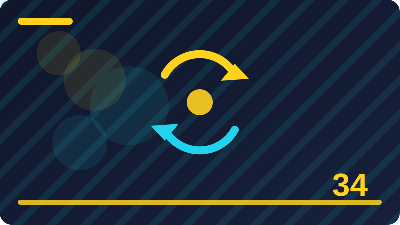

Chapter 34: Secure Coding Basics for Developers

Section 1: Why Developers Matter for Security
This section is about why developers matter for security. It matters because it is one of the everyday habits that separate a careful defender from someone who only reacts after trouble arrives. Take it slowly, in plain words, and connect it to systems and files you own and control. The examples in this section use only your own computer, your own accounts, and your own notes. By the end, you should be able to explain why developers matter for security to a friend without jargon, and to say what you would check first, what you would do next, and what you would write down.
Developers matter for security because most weaknesses start as ordinary coding decisions. A program that trusts input without checking it, stores a secret where anyone can read it, or shows a detailed error to a stranger, can create a vulnerability without anyone intending harm. Secure coding is not a separate magic skill; it is careful coding with security in mind from the start. When security is added at the end, it is often rushed and incomplete. When it is part of the design, it becomes natural.
Threat modelling is a plain-words way of asking: what are we protecting, who might try to harm it, and how could they try? You do not need fancy diagrams to start. List the valuable things your program handles, such as passwords, personal data, or files. List the places where outside input enters, such as forms, files, and network requests. Then ask what could go wrong at each entry point, and what check would stop it. That short exercise guides every other secure coding choice.
A trust boundary is a line between parts of a system that trust each other and parts that do not. Input from outside your program, including from users, files, and other systems, sits outside the boundary and must be checked before it is trusted. Data from your own database or your own configuration is still worth checking when it could have been changed by someone else, but outside input is the first priority. Drawing this line in your mind helps you decide where checks belong, instead of scattering them at random.
Put why developers matter for security into practice on your own system this week, in a small and safe way. Start with one example you control, write down what you expected to see, and then compare what you actually saw. If the result surprises you, do not rush to a conclusion; check one more source, such as a second log, a settings page, or a trusted help page. A careful note, with the date and the result, turns a single exercise into a habit you can repeat. That habit is the real lesson of this section, more than any single fact, because defenders improve by repeating calm checks, not by memorising warnings. Ask where outside input enters this code, and what check protects that entry point. Choose the safe default first, and require a deliberate reason to weaken it.
Check: In your own words, what does why developers matter for security mean, and what is one safe check you would do on your own system?
Section 2: Security as Part of Good Code
This section is about security as part of good code. It matters because it is one of the everyday habits that separate a careful defender from someone who only reacts after trouble arrives. Take it slowly, in plain words, and connect it to systems and files you own and control. The examples in this section use only your own computer, your own accounts, and your own notes. By the end, you should be able to explain security as part of good code to a friend without jargon, and to say what you would check first, what you would do next, and what you would write down.
Failing safely means that when something goes wrong, the program stops in a safe state instead of opening a door. A failed login should not reveal whether the user name or the password was wrong in a way that helps guessing, and a failed check should deny access rather than allow it by accident. Error messages should help the honest user fix a mistake, such as a missing field, without revealing internal details such as file paths, database structure, or secret values. The user sees help; a stranger sees nothing useful.
Secrets do not belong in source code. A password, key, or token written into code can be copied, shared, and forgotten, and changing it later means changing the code. Store secrets in a proper secret store or environment provided by the platform you are using, keep them out of version control, and rotate them if they are ever exposed. The same rule applies to examples and tests: never use a real secret in a sample, because samples have a habit of being copied into real programs.
Trusted libraries save time and reduce risk, but only when they are chosen and maintained carefully. A well-known library that is actively maintained and widely used is usually safer than code you write yourself for a hard problem such as cryptography or password handling. Check that the library is still maintained, read its documentation, and keep it updated. An outdated library can carry known weaknesses, and a library you never update quietly becomes a liability. Record which libraries you use and why.
Put security as part of good code into practice on your own system this week, in a small and safe way. Start with one example you control, write down what you expected to see, and then compare what you actually saw. If the result surprises you, do not rush to a conclusion; check one more source, such as a second log, a settings page, or a trusted help page. A careful note, with the date and the result, turns a single exercise into a habit you can repeat. That habit is the real lesson of this section, more than any single fact, because defenders improve by repeating calm checks, not by memorising warnings. Choose the safe default first, and require a deliberate reason to weaken it.
Check: In your own words, what does security as part of good code mean, and what is one safe check you would do on your own system?
Section 3: Thinking About Attackers Safely
This section is about thinking about attackers safely. It matters because it is one of the everyday habits that separate a careful defender from someone who only reacts after trouble arrives. Take it slowly, in plain words, and connect it to systems and files you own and control. The examples in this section use only your own computer, your own accounts, and your own notes. By the end, you should be able to explain thinking about attackers safely to a friend without jargon, and to say what you would check first, what you would do next, and what you would write down.
Code review is one of the strongest defences a developer has, because a second pair of eyes catches what the author missed. Review your own code after a break, when you can read it fresh, and ask a teammate to review security-sensitive changes. A good review asks simple questions: where does input enter, is it checked, are secrets handled safely, and does failure deny access? Keep reviews kind and specific. The goal is safer code, not blame, and a team that reviews kindly will review more often.
Testing for security means testing the sad paths, not only the happy path. The happy path is when the user does everything right. The sad path is when input is missing, too long, the wrong type, or deliberately odd. Write tests for empty values, very long values, unexpected characters, and missing files, and check that the program handles them safely. A program that crashes or grants access on odd input has a bug that matters, even if no attacker has found it yet.
Safe file handling starts with a simple rule: never let outside input choose a file path without checking it. A file name supplied by a user could point outside the folder you intended, or overwrite something important. Limit uploads to expected types and sizes, store them outside the web-accessible folder when you can, and check the result of every file operation. The same care applies to commands and system calls: prefer safe library functions over building commands from user input.
Put thinking about attackers safely into practice on your own system this week, in a small and safe way. Start with one example you control, write down what you expected to see, and then compare what you actually saw. If the result surprises you, do not rush to a conclusion; check one more source, such as a second log, a settings page, or a trusted help page. A careful note, with the date and the result, turns a single exercise into a habit you can repeat. That habit is the real lesson of this section, more than any single fact, because defenders improve by repeating calm checks, not by memorising warnings. Test the sad path, not only the happy path, before you call the work done. If a change handles secrets or passwords, ask a second person to review it.
Check: In your own words, what does thinking about attackers safely mean, and what is one safe check you would do on your own system?
Section 4: Threat Modelling in Plain Words
This section is about threat modelling in plain words. It matters because it is one of the everyday habits that separate a careful defender from someone who only reacts after trouble arrives. Take it slowly, in plain words, and connect it to systems and files you own and control. The examples in this section use only your own computer, your own accounts, and your own notes. By the end, you should be able to explain threat modelling in plain words to a friend without jargon, and to say what you would check first, what you would do next, and what you would write down.
Security and usability must work together, or users will work around the security. A login that is too painful will push people to share passwords or disable protection. A warning that appears for everything will be ignored for the thing that matters. Design security that fits the task: clear messages, sensible defaults, and help at the moment of a mistake. When users understand why a check exists, they are far more likely to follow it, and that cooperation is itself a security control.
Developers matter for security because most weaknesses start as ordinary coding decisions. A program that trusts input without checking it, stores a secret where anyone can read it, or shows a detailed error to a stranger, can create a vulnerability without anyone intending harm. Secure coding is not a separate magic skill; it is careful coding with security in mind from the start. When security is added at the end, it is often rushed and incomplete. When it is part of the design, it becomes natural.
Threat modelling is a plain-words way of asking: what are we protecting, who might try to harm it, and how could they try? You do not need fancy diagrams to start. List the valuable things your program handles, such as passwords, personal data, or files. List the places where outside input enters, such as forms, files, and network requests. Then ask what could go wrong at each entry point, and what check would stop it. That short exercise guides every other secure coding choice.
Put threat modelling in plain words into practice on your own system this week, in a small and safe way. Start with one example you control, write down what you expected to see, and then compare what you actually saw. If the result surprises you, do not rush to a conclusion; check one more source, such as a second log, a settings page, or a trusted help page. A careful note, with the date and the result, turns a single exercise into a habit you can repeat. That habit is the real lesson of this section, more than any single fact, because defenders improve by repeating calm checks, not by memorising warnings. If a change handles secrets or passwords, ask a second person to review it. Write a short comment explaining why a security check exists, for the next reader.
import secrets
token = secrets.token_hex(16)
print('Token length:', len(token))Check: In your own words, what does threat modelling in plain words mean, and what is one safe check you would do on your own system?
Section 5: Trust Boundaries in Plain Words
This section is about trust boundaries in plain words. It matters because it is one of the everyday habits that separate a careful defender from someone who only reacts after trouble arrives. Take it slowly, in plain words, and connect it to systems and files you own and control. The examples in this section use only your own computer, your own accounts, and your own notes. By the end, you should be able to explain trust boundaries in plain words to a friend without jargon, and to say what you would check first, what you would do next, and what you would write down.
A trust boundary is a line between parts of a system that trust each other and parts that do not. Input from outside your program, including from users, files, and other systems, sits outside the boundary and must be checked before it is trusted. Data from your own database or your own configuration is still worth checking when it could have been changed by someone else, but outside input is the first priority. Drawing this line in your mind helps you decide where checks belong, instead of scattering them at random.
Failing safely means that when something goes wrong, the program stops in a safe state instead of opening a door. A failed login should not reveal whether the user name or the password was wrong in a way that helps guessing, and a failed check should deny access rather than allow it by accident. Error messages should help the honest user fix a mistake, such as a missing field, without revealing internal details such as file paths, database structure, or secret values. The user sees help; a stranger sees nothing useful.
Secrets do not belong in source code. A password, key, or token written into code can be copied, shared, and forgotten, and changing it later means changing the code. Store secrets in a proper secret store or environment provided by the platform you are using, keep them out of version control, and rotate them if they are ever exposed. The same rule applies to examples and tests: never use a real secret in a sample, because samples have a habit of being copied into real programs.
Put trust boundaries in plain words into practice on your own system this week, in a small and safe way. Start with one example you control, write down what you expected to see, and then compare what you actually saw. If the result surprises you, do not rush to a conclusion; check one more source, such as a second log, a settings page, or a trusted help page. A careful note, with the date and the result, turns a single exercise into a habit you can repeat. That habit is the real lesson of this section, more than any single fact, because defenders improve by repeating calm checks, not by memorising warnings. Write a short comment explaining why a security check exists, for the next reader.
Check: In your own words, what does trust boundaries in plain words mean, and what is one safe check you would do on your own system?
Section 6: Never Trust Input Blindly
This section is about never trust input blindly. It matters because it is one of the everyday habits that separate a careful defender from someone who only reacts after trouble arrives. Take it slowly, in plain words, and connect it to systems and files you own and control. The examples in this section use only your own computer, your own accounts, and your own notes. By the end, you should be able to explain never trust input blindly to a friend without jargon, and to say what you would check first, what you would do next, and what you would write down.
Trusted libraries save time and reduce risk, but only when they are chosen and maintained carefully. A well-known library that is actively maintained and widely used is usually safer than code you write yourself for a hard problem such as cryptography or password handling. Check that the library is still maintained, read its documentation, and keep it updated. An outdated library can carry known weaknesses, and a library you never update quietly becomes a liability. Record which libraries you use and why.
Code review is one of the strongest defences a developer has, because a second pair of eyes catches what the author missed. Review your own code after a break, when you can read it fresh, and ask a teammate to review security-sensitive changes. A good review asks simple questions: where does input enter, is it checked, are secrets handled safely, and does failure deny access? Keep reviews kind and specific. The goal is safer code, not blame, and a team that reviews kindly will review more often.
Testing for security means testing the sad paths, not only the happy path. The happy path is when the user does everything right. The sad path is when input is missing, too long, the wrong type, or deliberately odd. Write tests for empty values, very long values, unexpected characters, and missing files, and check that the program handles them safely. A program that crashes or grants access on odd input has a bug that matters, even if no attacker has found it yet.
Put never trust input blindly into practice on your own system this week, in a small and safe way. Start with one example you control, write down what you expected to see, and then compare what you actually saw. If the result surprises you, do not rush to a conclusion; check one more source, such as a second log, a settings page, or a trusted help page. A careful note, with the date and the result, turns a single exercise into a habit you can repeat. That habit is the real lesson of this section, more than any single fact, because defenders improve by repeating calm checks, not by memorising warnings. When a library handles a hard problem well, prefer it over writing your own version. Ask where outside input enters this code, and what check protects that entry point.
Check: In your own words, what does never trust input blindly mean, and what is one safe check you would do on your own system?
Section 7: Least Privilege in Code
This section is about least privilege in code. It matters because it is one of the everyday habits that separate a careful defender from someone who only reacts after trouble arrives. Take it slowly, in plain words, and connect it to systems and files you own and control. The examples in this section use only your own computer, your own accounts, and your own notes. By the end, you should be able to explain least privilege in code to a friend without jargon, and to say what you would check first, what you would do next, and what you would write down.
Safe file handling starts with a simple rule: never let outside input choose a file path without checking it. A file name supplied by a user could point outside the folder you intended, or overwrite something important. Limit uploads to expected types and sizes, store them outside the web-accessible folder when you can, and check the result of every file operation. The same care applies to commands and system calls: prefer safe library functions over building commands from user input.
Security and usability must work together, or users will work around the security. A login that is too painful will push people to share passwords or disable protection. A warning that appears for everything will be ignored for the thing that matters. Design security that fits the task: clear messages, sensible defaults, and help at the moment of a mistake. When users understand why a check exists, they are far more likely to follow it, and that cooperation is itself a security control.
Developers matter for security because most weaknesses start as ordinary coding decisions. A program that trusts input without checking it, stores a secret where anyone can read it, or shows a detailed error to a stranger, can create a vulnerability without anyone intending harm. Secure coding is not a separate magic skill; it is careful coding with security in mind from the start. When security is added at the end, it is often rushed and incomplete. When it is part of the design, it becomes natural.
Put least privilege in code into practice on your own system this week, in a small and safe way. Start with one example you control, write down what you expected to see, and then compare what you actually saw. If the result surprises you, do not rush to a conclusion; check one more source, such as a second log, a settings page, or a trusted help page. A careful note, with the date and the result, turns a single exercise into a habit you can repeat. That habit is the real lesson of this section, more than any single fact, because defenders improve by repeating calm checks, not by memorising warnings. Ask where outside input enters this code, and what check protects that entry point. Choose the safe default first, and require a deliberate reason to weaken it. Test the sad path, not only the happy path, before you call the work done.
Check: In your own words, what does least privilege in code mean, and what is one safe check you would do on your own system?
Section 8: Failing Safely, Not Loudly
This section is about failing safely, not loudly. It matters because it is one of the everyday habits that separate a careful defender from someone who only reacts after trouble arrives. Take it slowly, in plain words, and connect it to systems and files you own and control. The examples in this section use only your own computer, your own accounts, and your own notes. By the end, you should be able to explain failing safely, not loudly to a friend without jargon, and to say what you would check first, what you would do next, and what you would write down.
Threat modelling is a plain-words way of asking: what are we protecting, who might try to harm it, and how could they try? You do not need fancy diagrams to start. List the valuable things your program handles, such as passwords, personal data, or files. List the places where outside input enters, such as forms, files, and network requests. Then ask what could go wrong at each entry point, and what check would stop it. That short exercise guides every other secure coding choice.
A trust boundary is a line between parts of a system that trust each other and parts that do not. Input from outside your program, including from users, files, and other systems, sits outside the boundary and must be checked before it is trusted. Data from your own database or your own configuration is still worth checking when it could have been changed by someone else, but outside input is the first priority. Drawing this line in your mind helps you decide where checks belong, instead of scattering them at random.
Failing safely means that when something goes wrong, the program stops in a safe state instead of opening a door. A failed login should not reveal whether the user name or the password was wrong in a way that helps guessing, and a failed check should deny access rather than allow it by accident. Error messages should help the honest user fix a mistake, such as a missing field, without revealing internal details such as file paths, database structure, or secret values. The user sees help; a stranger sees nothing useful.
Put failing safely, not loudly into practice on your own system this week, in a small and safe way. Start with one example you control, write down what you expected to see, and then compare what you actually saw. If the result surprises you, do not rush to a conclusion; check one more source, such as a second log, a settings page, or a trusted help page. A careful note, with the date and the result, turns a single exercise into a habit you can repeat. That habit is the real lesson of this section, more than any single fact, because defenders improve by repeating calm checks, not by memorising warnings. Choose the safe default first, and require a deliberate reason to weaken it.
password = 'not-a-real-password'
print('Password stored in code?', 'password' in password.lower())Check: In your own words, what does failing safely, not loudly mean, and what is one safe check you would do on your own system?
Section 9: Error Messages That Help Users
This section is about error messages that help users. It matters because it is one of the everyday habits that separate a careful defender from someone who only reacts after trouble arrives. Take it slowly, in plain words, and connect it to systems and files you own and control. The examples in this section use only your own computer, your own accounts, and your own notes. By the end, you should be able to explain error messages that help users to a friend without jargon, and to say what you would check first, what you would do next, and what you would write down.
Secrets do not belong in source code. A password, key, or token written into code can be copied, shared, and forgotten, and changing it later means changing the code. Store secrets in a proper secret store or environment provided by the platform you are using, keep them out of version control, and rotate them if they are ever exposed. The same rule applies to examples and tests: never use a real secret in a sample, because samples have a habit of being copied into real programs.
Trusted libraries save time and reduce risk, but only when they are chosen and maintained carefully. A well-known library that is actively maintained and widely used is usually safer than code you write yourself for a hard problem such as cryptography or password handling. Check that the library is still maintained, read its documentation, and keep it updated. An outdated library can carry known weaknesses, and a library you never update quietly becomes a liability. Record which libraries you use and why.
Code review is one of the strongest defences a developer has, because a second pair of eyes catches what the author missed. Review your own code after a break, when you can read it fresh, and ask a teammate to review security-sensitive changes. A good review asks simple questions: where does input enter, is it checked, are secrets handled safely, and does failure deny access? Keep reviews kind and specific. The goal is safer code, not blame, and a team that reviews kindly will review more often.
Put error messages that help users into practice on your own system this week, in a small and safe way. Start with one example you control, write down what you expected to see, and then compare what you actually saw. If the result surprises you, do not rush to a conclusion; check one more source, such as a second log, a settings page, or a trusted help page. A careful note, with the date and the result, turns a single exercise into a habit you can repeat. That habit is the real lesson of this section, more than any single fact, because defenders improve by repeating calm checks, not by memorising warnings. Test the sad path, not only the happy path, before you call the work done. If a change handles secrets or passwords, ask a second person to review it.
Check: In your own words, what does error messages that help users mean, and what is one safe check you would do on your own system?
Section 10: Error Messages That Leak Too Much
This section is about error messages that leak too much. It matters because it is one of the everyday habits that separate a careful defender from someone who only reacts after trouble arrives. Take it slowly, in plain words, and connect it to systems and files you own and control. The examples in this section use only your own computer, your own accounts, and your own notes. By the end, you should be able to explain error messages that leak too much to a friend without jargon, and to say what you would check first, what you would do next, and what you would write down.
Testing for security means testing the sad paths, not only the happy path. The happy path is when the user does everything right. The sad path is when input is missing, too long, the wrong type, or deliberately odd. Write tests for empty values, very long values, unexpected characters, and missing files, and check that the program handles them safely. A program that crashes or grants access on odd input has a bug that matters, even if no attacker has found it yet.
Safe file handling starts with a simple rule: never let outside input choose a file path without checking it. A file name supplied by a user could point outside the folder you intended, or overwrite something important. Limit uploads to expected types and sizes, store them outside the web-accessible folder when you can, and check the result of every file operation. The same care applies to commands and system calls: prefer safe library functions over building commands from user input.
Security and usability must work together, or users will work around the security. A login that is too painful will push people to share passwords or disable protection. A warning that appears for everything will be ignored for the thing that matters. Design security that fits the task: clear messages, sensible defaults, and help at the moment of a mistake. When users understand why a check exists, they are far more likely to follow it, and that cooperation is itself a security control.
Put error messages that leak too much into practice on your own system this week, in a small and safe way. Start with one example you control, write down what you expected to see, and then compare what you actually saw. If the result surprises you, do not rush to a conclusion; check one more source, such as a second log, a settings page, or a trusted help page. A careful note, with the date and the result, turns a single exercise into a habit you can repeat. That habit is the real lesson of this section, more than any single fact, because defenders improve by repeating calm checks, not by memorising warnings. If a change handles secrets or passwords, ask a second person to review it. Write a short comment explaining why a security check exists, for the next reader.
Check: In your own words, what does error messages that leak too much mean, and what is one safe check you would do on your own system?
Section 11: Logging Safely in Code
This section is about logging safely in code. It matters because it is one of the everyday habits that separate a careful defender from someone who only reacts after trouble arrives. Take it slowly, in plain words, and connect it to systems and files you own and control. The examples in this section use only your own computer, your own accounts, and your own notes. By the end, you should be able to explain logging safely in code to a friend without jargon, and to say what you would check first, what you would do next, and what you would write down.
Developers matter for security because most weaknesses start as ordinary coding decisions. A program that trusts input without checking it, stores a secret where anyone can read it, or shows a detailed error to a stranger, can create a vulnerability without anyone intending harm. Secure coding is not a separate magic skill; it is careful coding with security in mind from the start. When security is added at the end, it is often rushed and incomplete. When it is part of the design, it becomes natural.
Threat modelling is a plain-words way of asking: what are we protecting, who might try to harm it, and how could they try? You do not need fancy diagrams to start. List the valuable things your program handles, such as passwords, personal data, or files. List the places where outside input enters, such as forms, files, and network requests. Then ask what could go wrong at each entry point, and what check would stop it. That short exercise guides every other secure coding choice.
A trust boundary is a line between parts of a system that trust each other and parts that do not. Input from outside your program, including from users, files, and other systems, sits outside the boundary and must be checked before it is trusted. Data from your own database or your own configuration is still worth checking when it could have been changed by someone else, but outside input is the first priority. Drawing this line in your mind helps you decide where checks belong, instead of scattering them at random.
Put logging safely in code into practice on your own system this week, in a small and safe way. Start with one example you control, write down what you expected to see, and then compare what you actually saw. If the result surprises you, do not rush to a conclusion; check one more source, such as a second log, a settings page, or a trusted help page. A careful note, with the date and the result, turns a single exercise into a habit you can repeat. That habit is the real lesson of this section, more than any single fact, because defenders improve by repeating calm checks, not by memorising warnings. Write a short comment explaining why a security check exists, for the next reader. When a library handles a hard problem well, prefer it over writing your own version.
Check: In your own words, what does logging safely in code mean, and what is one safe check you would do on your own system?
Section 12: Secrets Do Not Belong in Code
This section is about secrets do not belong in code. It matters because it is one of the everyday habits that separate a careful defender from someone who only reacts after trouble arrives. Take it slowly, in plain words, and connect it to systems and files you own and control. The examples in this section use only your own computer, your own accounts, and your own notes. By the end, you should be able to explain secrets do not belong in code to a friend without jargon, and to say what you would check first, what you would do next, and what you would write down.
Failing safely means that when something goes wrong, the program stops in a safe state instead of opening a door. A failed login should not reveal whether the user name or the password was wrong in a way that helps guessing, and a failed check should deny access rather than allow it by accident. Error messages should help the honest user fix a mistake, such as a missing field, without revealing internal details such as file paths, database structure, or secret values. The user sees help; a stranger sees nothing useful.
Secrets do not belong in source code. A password, key, or token written into code can be copied, shared, and forgotten, and changing it later means changing the code. Store secrets in a proper secret store or environment provided by the platform you are using, keep them out of version control, and rotate them if they are ever exposed. The same rule applies to examples and tests: never use a real secret in a sample, because samples have a habit of being copied into real programs.
Trusted libraries save time and reduce risk, but only when they are chosen and maintained carefully. A well-known library that is actively maintained and widely used is usually safer than code you write yourself for a hard problem such as cryptography or password handling. Check that the library is still maintained, read its documentation, and keep it updated. An outdated library can carry known weaknesses, and a library you never update quietly becomes a liability. Record which libraries you use and why.
Put secrets do not belong in code into practice on your own system this week, in a small and safe way. Start with one example you control, write down what you expected to see, and then compare what you actually saw. If the result surprises you, do not rush to a conclusion; check one more source, such as a second log, a settings page, or a trusted help page. A careful note, with the date and the result, turns a single exercise into a habit you can repeat. That habit is the real lesson of this section, more than any single fact, because defenders improve by repeating calm checks, not by memorising warnings. When a library handles a hard problem well, prefer it over writing your own version.
user_input = ' hello '
print(repr(user_input.strip()))Check: In your own words, what does secrets do not belong in code mean, and what is one safe check you would do on your own system?
Section 13: Hardcoded Passwords and Why They Fail
This section is about hardcoded passwords and why they fail. It matters because it is one of the everyday habits that separate a careful defender from someone who only reacts after trouble arrives. Take it slowly, in plain words, and connect it to systems and files you own and control. The examples in this section use only your own computer, your own accounts, and your own notes. By the end, you should be able to explain hardcoded passwords and why they fail to a friend without jargon, and to say what you would check first, what you would do next, and what you would write down.
Code review is one of the strongest defences a developer has, because a second pair of eyes catches what the author missed. Review your own code after a break, when you can read it fresh, and ask a teammate to review security-sensitive changes. A good review asks simple questions: where does input enter, is it checked, are secrets handled safely, and does failure deny access? Keep reviews kind and specific. The goal is safer code, not blame, and a team that reviews kindly will review more often.
Testing for security means testing the sad paths, not only the happy path. The happy path is when the user does everything right. The sad path is when input is missing, too long, the wrong type, or deliberately odd. Write tests for empty values, very long values, unexpected characters, and missing files, and check that the program handles them safely. A program that crashes or grants access on odd input has a bug that matters, even if no attacker has found it yet.
Safe file handling starts with a simple rule: never let outside input choose a file path without checking it. A file name supplied by a user could point outside the folder you intended, or overwrite something important. Limit uploads to expected types and sizes, store them outside the web-accessible folder when you can, and check the result of every file operation. The same care applies to commands and system calls: prefer safe library functions over building commands from user input.
Put hardcoded passwords and why they fail into practice on your own system this week, in a small and safe way. Start with one example you control, write down what you expected to see, and then compare what you actually saw. If the result surprises you, do not rush to a conclusion; check one more source, such as a second log, a settings page, or a trusted help page. A careful note, with the date and the result, turns a single exercise into a habit you can repeat. That habit is the real lesson of this section, more than any single fact, because defenders improve by repeating calm checks, not by memorising warnings. Ask where outside input enters this code, and what check protects that entry point. Choose the safe default first, and require a deliberate reason to weaken it.
Check: In your own words, what does hardcoded passwords and why they fail mean, and what is one safe check you would do on your own system?
Section 14: Reading Secrets Safely
This section is about reading secrets safely. It matters because it is one of the everyday habits that separate a careful defender from someone who only reacts after trouble arrives. Take it slowly, in plain words, and connect it to systems and files you own and control. The examples in this section use only your own computer, your own accounts, and your own notes. By the end, you should be able to explain reading secrets safely to a friend without jargon, and to say what you would check first, what you would do next, and what you would write down.
Security and usability must work together, or users will work around the security. A login that is too painful will push people to share passwords or disable protection. A warning that appears for everything will be ignored for the thing that matters. Design security that fits the task: clear messages, sensible defaults, and help at the moment of a mistake. When users understand why a check exists, they are far more likely to follow it, and that cooperation is itself a security control.
Developers matter for security because most weaknesses start as ordinary coding decisions. A program that trusts input without checking it, stores a secret where anyone can read it, or shows a detailed error to a stranger, can create a vulnerability without anyone intending harm. Secure coding is not a separate magic skill; it is careful coding with security in mind from the start. When security is added at the end, it is often rushed and incomplete. When it is part of the design, it becomes natural.
Threat modelling is a plain-words way of asking: what are we protecting, who might try to harm it, and how could they try? You do not need fancy diagrams to start. List the valuable things your program handles, such as passwords, personal data, or files. List the places where outside input enters, such as forms, files, and network requests. Then ask what could go wrong at each entry point, and what check would stop it. That short exercise guides every other secure coding choice.
Put reading secrets safely into practice on your own system this week, in a small and safe way. Start with one example you control, write down what you expected to see, and then compare what you actually saw. If the result surprises you, do not rush to a conclusion; check one more source, such as a second log, a settings page, or a trusted help page. A careful note, with the date and the result, turns a single exercise into a habit you can repeat. That habit is the real lesson of this section, more than any single fact, because defenders improve by repeating calm checks, not by memorising warnings. Choose the safe default first, and require a deliberate reason to weaken it. Test the sad path, not only the happy path, before you call the work done. If a change handles secrets or passwords, ask a second person to review it.
Check: In your own words, what does reading secrets safely mean, and what is one safe check you would do on your own system?
Section 15: Using Trusted Libraries
This section is about using trusted libraries. It matters because it is one of the everyday habits that separate a careful defender from someone who only reacts after trouble arrives. Take it slowly, in plain words, and connect it to systems and files you own and control. The examples in this section use only your own computer, your own accounts, and your own notes. By the end, you should be able to explain using trusted libraries to a friend without jargon, and to say what you would check first, what you would do next, and what you would write down.
A trust boundary is a line between parts of a system that trust each other and parts that do not. Input from outside your program, including from users, files, and other systems, sits outside the boundary and must be checked before it is trusted. Data from your own database or your own configuration is still worth checking when it could have been changed by someone else, but outside input is the first priority. Drawing this line in your mind helps you decide where checks belong, instead of scattering them at random.
Failing safely means that when something goes wrong, the program stops in a safe state instead of opening a door. A failed login should not reveal whether the user name or the password was wrong in a way that helps guessing, and a failed check should deny access rather than allow it by accident. Error messages should help the honest user fix a mistake, such as a missing field, without revealing internal details such as file paths, database structure, or secret values. The user sees help; a stranger sees nothing useful.
Secrets do not belong in source code. A password, key, or token written into code can be copied, shared, and forgotten, and changing it later means changing the code. Store secrets in a proper secret store or environment provided by the platform you are using, keep them out of version control, and rotate them if they are ever exposed. The same rule applies to examples and tests: never use a real secret in a sample, because samples have a habit of being copied into real programs.
Put using trusted libraries into practice on your own system this week, in a small and safe way. Start with one example you control, write down what you expected to see, and then compare what you actually saw. If the result surprises you, do not rush to a conclusion; check one more source, such as a second log, a settings page, or a trusted help page. A careful note, with the date and the result, turns a single exercise into a habit you can repeat. That habit is the real lesson of this section, more than any single fact, because defenders improve by repeating calm checks, not by memorising warnings. Test the sad path, not only the happy path, before you call the work done.
Check: In your own words, what does using trusted libraries mean, and what is one safe check you would do on your own system?
Section 16: Keeping Libraries Up to Date
This section is about keeping libraries up to date. It matters because it is one of the everyday habits that separate a careful defender from someone who only reacts after trouble arrives. Take it slowly, in plain words, and connect it to systems and files you own and control. The examples in this section use only your own computer, your own accounts, and your own notes. By the end, you should be able to explain keeping libraries up to date to a friend without jargon, and to say what you would check first, what you would do next, and what you would write down.
Trusted libraries save time and reduce risk, but only when they are chosen and maintained carefully. A well-known library that is actively maintained and widely used is usually safer than code you write yourself for a hard problem such as cryptography or password handling. Check that the library is still maintained, read its documentation, and keep it updated. An outdated library can carry known weaknesses, and a library you never update quietly becomes a liability. Record which libraries you use and why.
Code review is one of the strongest defences a developer has, because a second pair of eyes catches what the author missed. Review your own code after a break, when you can read it fresh, and ask a teammate to review security-sensitive changes. A good review asks simple questions: where does input enter, is it checked, are secrets handled safely, and does failure deny access? Keep reviews kind and specific. The goal is safer code, not blame, and a team that reviews kindly will review more often.
Testing for security means testing the sad paths, not only the happy path. The happy path is when the user does everything right. The sad path is when input is missing, too long, the wrong type, or deliberately odd. Write tests for empty values, very long values, unexpected characters, and missing files, and check that the program handles them safely. A program that crashes or grants access on odd input has a bug that matters, even if no attacker has found it yet.
Put keeping libraries up to date into practice on your own system this week, in a small and safe way. Start with one example you control, write down what you expected to see, and then compare what you actually saw. If the result surprises you, do not rush to a conclusion; check one more source, such as a second log, a settings page, or a trusted help page. A careful note, with the date and the result, turns a single exercise into a habit you can repeat. That habit is the real lesson of this section, more than any single fact, because defenders improve by repeating calm checks, not by memorising warnings. If a change handles secrets or passwords, ask a second person to review it. Write a short comment explaining why a security check exists, for the next reader.
import secrets
token = secrets.token_hex(16)
print('Token length:', len(token))Check: In your own words, what does keeping libraries up to date mean, and what is one safe check you would do on your own system?
Section 17: Checking Library Health
This section is about checking library health. It matters because it is one of the everyday habits that separate a careful defender from someone who only reacts after trouble arrives. Take it slowly, in plain words, and connect it to systems and files you own and control. The examples in this section use only your own computer, your own accounts, and your own notes. By the end, you should be able to explain checking library health to a friend without jargon, and to say what you would check first, what you would do next, and what you would write down.
Safe file handling starts with a simple rule: never let outside input choose a file path without checking it. A file name supplied by a user could point outside the folder you intended, or overwrite something important. Limit uploads to expected types and sizes, store them outside the web-accessible folder when you can, and check the result of every file operation. The same care applies to commands and system calls: prefer safe library functions over building commands from user input.
Security and usability must work together, or users will work around the security. A login that is too painful will push people to share passwords or disable protection. A warning that appears for everything will be ignored for the thing that matters. Design security that fits the task: clear messages, sensible defaults, and help at the moment of a mistake. When users understand why a check exists, they are far more likely to follow it, and that cooperation is itself a security control.
Developers matter for security because most weaknesses start as ordinary coding decisions. A program that trusts input without checking it, stores a secret where anyone can read it, or shows a detailed error to a stranger, can create a vulnerability without anyone intending harm. Secure coding is not a separate magic skill; it is careful coding with security in mind from the start. When security is added at the end, it is often rushed and incomplete. When it is part of the design, it becomes natural.
Put checking library health into practice on your own system this week, in a small and safe way. Start with one example you control, write down what you expected to see, and then compare what you actually saw. If the result surprises you, do not rush to a conclusion; check one more source, such as a second log, a settings page, or a trusted help page. A careful note, with the date and the result, turns a single exercise into a habit you can repeat. That habit is the real lesson of this section, more than any single fact, because defenders improve by repeating calm checks, not by memorising warnings. Write a short comment explaining why a security check exists, for the next reader. When a library handles a hard problem well, prefer it over writing your own version. Ask where outside input enters this code, and what check protects that entry point.
Check: In your own words, what does checking library health mean, and what is one safe check you would do on your own system?
Section 18: Writing Clear, Simple Code
This section is about writing clear, simple code. It matters because it is one of the everyday habits that separate a careful defender from someone who only reacts after trouble arrives. Take it slowly, in plain words, and connect it to systems and files you own and control. The examples in this section use only your own computer, your own accounts, and your own notes. By the end, you should be able to explain writing clear, simple code to a friend without jargon, and to say what you would check first, what you would do next, and what you would write down.
Threat modelling is a plain-words way of asking: what are we protecting, who might try to harm it, and how could they try? You do not need fancy diagrams to start. List the valuable things your program handles, such as passwords, personal data, or files. List the places where outside input enters, such as forms, files, and network requests. Then ask what could go wrong at each entry point, and what check would stop it. That short exercise guides every other secure coding choice.
A trust boundary is a line between parts of a system that trust each other and parts that do not. Input from outside your program, including from users, files, and other systems, sits outside the boundary and must be checked before it is trusted. Data from your own database or your own configuration is still worth checking when it could have been changed by someone else, but outside input is the first priority. Drawing this line in your mind helps you decide where checks belong, instead of scattering them at random.
Failing safely means that when something goes wrong, the program stops in a safe state instead of opening a door. A failed login should not reveal whether the user name or the password was wrong in a way that helps guessing, and a failed check should deny access rather than allow it by accident. Error messages should help the honest user fix a mistake, such as a missing field, without revealing internal details such as file paths, database structure, or secret values. The user sees help; a stranger sees nothing useful.
Put writing clear, simple code into practice on your own system this week, in a small and safe way. Start with one example you control, write down what you expected to see, and then compare what you actually saw. If the result surprises you, do not rush to a conclusion; check one more source, such as a second log, a settings page, or a trusted help page. A careful note, with the date and the result, turns a single exercise into a habit you can repeat. That habit is the real lesson of this section, more than any single fact, because defenders improve by repeating calm checks, not by memorising warnings. When a library handles a hard problem well, prefer it over writing your own version.
Check: In your own words, what does writing clear, simple code mean, and what is one safe check you would do on your own system?
Section 19: Code Review for Security
This section is about code review for security. It matters because it is one of the everyday habits that separate a careful defender from someone who only reacts after trouble arrives. Take it slowly, in plain words, and connect it to systems and files you own and control. The examples in this section use only your own computer, your own accounts, and your own notes. By the end, you should be able to explain code review for security to a friend without jargon, and to say what you would check first, what you would do next, and what you would write down.
Secrets do not belong in source code. A password, key, or token written into code can be copied, shared, and forgotten, and changing it later means changing the code. Store secrets in a proper secret store or environment provided by the platform you are using, keep them out of version control, and rotate them if they are ever exposed. The same rule applies to examples and tests: never use a real secret in a sample, because samples have a habit of being copied into real programs.
Trusted libraries save time and reduce risk, but only when they are chosen and maintained carefully. A well-known library that is actively maintained and widely used is usually safer than code you write yourself for a hard problem such as cryptography or password handling. Check that the library is still maintained, read its documentation, and keep it updated. An outdated library can carry known weaknesses, and a library you never update quietly becomes a liability. Record which libraries you use and why.
Code review is one of the strongest defences a developer has, because a second pair of eyes catches what the author missed. Review your own code after a break, when you can read it fresh, and ask a teammate to review security-sensitive changes. A good review asks simple questions: where does input enter, is it checked, are secrets handled safely, and does failure deny access? Keep reviews kind and specific. The goal is safer code, not blame, and a team that reviews kindly will review more often.
Put code review for security into practice on your own system this week, in a small and safe way. Start with one example you control, write down what you expected to see, and then compare what you actually saw. If the result surprises you, do not rush to a conclusion; check one more source, such as a second log, a settings page, or a trusted help page. A careful note, with the date and the result, turns a single exercise into a habit you can repeat. That habit is the real lesson of this section, more than any single fact, because defenders improve by repeating calm checks, not by memorising warnings. Ask where outside input enters this code, and what check protects that entry point. Choose the safe default first, and require a deliberate reason to weaken it.
Check: In your own words, what does code review for security mean, and what is one safe check you would do on your own system?
Section 20: Reviewing Your Own Code
This section is about reviewing your own code. It matters because it is one of the everyday habits that separate a careful defender from someone who only reacts after trouble arrives. Take it slowly, in plain words, and connect it to systems and files you own and control. The examples in this section use only your own computer, your own accounts, and your own notes. By the end, you should be able to explain reviewing your own code to a friend without jargon, and to say what you would check first, what you would do next, and what you would write down.
Testing for security means testing the sad paths, not only the happy path. The happy path is when the user does everything right. The sad path is when input is missing, too long, the wrong type, or deliberately odd. Write tests for empty values, very long values, unexpected characters, and missing files, and check that the program handles them safely. A program that crashes or grants access on odd input has a bug that matters, even if no attacker has found it yet.
Safe file handling starts with a simple rule: never let outside input choose a file path without checking it. A file name supplied by a user could point outside the folder you intended, or overwrite something important. Limit uploads to expected types and sizes, store them outside the web-accessible folder when you can, and check the result of every file operation. The same care applies to commands and system calls: prefer safe library functions over building commands from user input.
Security and usability must work together, or users will work around the security. A login that is too painful will push people to share passwords or disable protection. A warning that appears for everything will be ignored for the thing that matters. Design security that fits the task: clear messages, sensible defaults, and help at the moment of a mistake. When users understand why a check exists, they are far more likely to follow it, and that cooperation is itself a security control.
Put reviewing your own code into practice on your own system this week, in a small and safe way. Start with one example you control, write down what you expected to see, and then compare what you actually saw. If the result surprises you, do not rush to a conclusion; check one more source, such as a second log, a settings page, or a trusted help page. A careful note, with the date and the result, turns a single exercise into a habit you can repeat. That habit is the real lesson of this section, more than any single fact, because defenders improve by repeating calm checks, not by memorising warnings. Choose the safe default first, and require a deliberate reason to weaken it. Test the sad path, not only the happy path, before you call the work done. If a change handles secrets or passwords, ask a second person to review it.
password = 'not-a-real-password'
print('Password stored in code?', 'password' in password.lower())Check: In your own words, what does reviewing your own code mean, and what is one safe check you would do on your own system?
Section 21: Reviewing a Teammate's Code
This section is about reviewing a teammate's code. It matters because it is one of the everyday habits that separate a careful defender from someone who only reacts after trouble arrives. Take it slowly, in plain words, and connect it to systems and files you own and control. The examples in this section use only your own computer, your own accounts, and your own notes. By the end, you should be able to explain reviewing a teammate's code to a friend without jargon, and to say what you would check first, what you would do next, and what you would write down.
Developers matter for security because most weaknesses start as ordinary coding decisions. A program that trusts input without checking it, stores a secret where anyone can read it, or shows a detailed error to a stranger, can create a vulnerability without anyone intending harm. Secure coding is not a separate magic skill; it is careful coding with security in mind from the start. When security is added at the end, it is often rushed and incomplete. When it is part of the design, it becomes natural.
Threat modelling is a plain-words way of asking: what are we protecting, who might try to harm it, and how could they try? You do not need fancy diagrams to start. List the valuable things your program handles, such as passwords, personal data, or files. List the places where outside input enters, such as forms, files, and network requests. Then ask what could go wrong at each entry point, and what check would stop it. That short exercise guides every other secure coding choice.
A trust boundary is a line between parts of a system that trust each other and parts that do not. Input from outside your program, including from users, files, and other systems, sits outside the boundary and must be checked before it is trusted. Data from your own database or your own configuration is still worth checking when it could have been changed by someone else, but outside input is the first priority. Drawing this line in your mind helps you decide where checks belong, instead of scattering them at random.
Put reviewing a teammate's code into practice on your own system this week, in a small and safe way. Start with one example you control, write down what you expected to see, and then compare what you actually saw. If the result surprises you, do not rush to a conclusion; check one more source, such as a second log, a settings page, or a trusted help page. A careful note, with the date and the result, turns a single exercise into a habit you can repeat. That habit is the real lesson of this section, more than any single fact, because defenders improve by repeating calm checks, not by memorising warnings. Test the sad path, not only the happy path, before you call the work done. If a change handles secrets or passwords, ask a second person to review it.
Check: In your own words, what does reviewing a teammate's code mean, and what is one safe check you would do on your own system?
Section 22: Testing for Security
This section is about testing for security. It matters because it is one of the everyday habits that separate a careful defender from someone who only reacts after trouble arrives. Take it slowly, in plain words, and connect it to systems and files you own and control. The examples in this section use only your own computer, your own accounts, and your own notes. By the end, you should be able to explain testing for security to a friend without jargon, and to say what you would check first, what you would do next, and what you would write down.
Failing safely means that when something goes wrong, the program stops in a safe state instead of opening a door. A failed login should not reveal whether the user name or the password was wrong in a way that helps guessing, and a failed check should deny access rather than allow it by accident. Error messages should help the honest user fix a mistake, such as a missing field, without revealing internal details such as file paths, database structure, or secret values. The user sees help; a stranger sees nothing useful.
Secrets do not belong in source code. A password, key, or token written into code can be copied, shared, and forgotten, and changing it later means changing the code. Store secrets in a proper secret store or environment provided by the platform you are using, keep them out of version control, and rotate them if they are ever exposed. The same rule applies to examples and tests: never use a real secret in a sample, because samples have a habit of being copied into real programs.
Trusted libraries save time and reduce risk, but only when they are chosen and maintained carefully. A well-known library that is actively maintained and widely used is usually safer than code you write yourself for a hard problem such as cryptography or password handling. Check that the library is still maintained, read its documentation, and keep it updated. An outdated library can carry known weaknesses, and a library you never update quietly becomes a liability. Record which libraries you use and why.
Put testing for security into practice on your own system this week, in a small and safe way. Start with one example you control, write down what you expected to see, and then compare what you actually saw. If the result surprises you, do not rush to a conclusion; check one more source, such as a second log, a settings page, or a trusted help page. A careful note, with the date and the result, turns a single exercise into a habit you can repeat. That habit is the real lesson of this section, more than any single fact, because defenders improve by repeating calm checks, not by memorising warnings. If a change handles secrets or passwords, ask a second person to review it. Write a short comment explaining why a security check exists, for the next reader.
Check: In your own words, what does testing for security mean, and what is one safe check you would do on your own system?
Section 23: Writing Tests for Sad Paths
This section is about writing tests for sad paths. It matters because it is one of the everyday habits that separate a careful defender from someone who only reacts after trouble arrives. Take it slowly, in plain words, and connect it to systems and files you own and control. The examples in this section use only your own computer, your own accounts, and your own notes. By the end, you should be able to explain writing tests for sad paths to a friend without jargon, and to say what you would check first, what you would do next, and what you would write down.
Code review is one of the strongest defences a developer has, because a second pair of eyes catches what the author missed. Review your own code after a break, when you can read it fresh, and ask a teammate to review security-sensitive changes. A good review asks simple questions: where does input enter, is it checked, are secrets handled safely, and does failure deny access? Keep reviews kind and specific. The goal is safer code, not blame, and a team that reviews kindly will review more often.
Testing for security means testing the sad paths, not only the happy path. The happy path is when the user does everything right. The sad path is when input is missing, too long, the wrong type, or deliberately odd. Write tests for empty values, very long values, unexpected characters, and missing files, and check that the program handles them safely. A program that crashes or grants access on odd input has a bug that matters, even if no attacker has found it yet.
Safe file handling starts with a simple rule: never let outside input choose a file path without checking it. A file name supplied by a user could point outside the folder you intended, or overwrite something important. Limit uploads to expected types and sizes, store them outside the web-accessible folder when you can, and check the result of every file operation. The same care applies to commands and system calls: prefer safe library functions over building commands from user input.
Put writing tests for sad paths into practice on your own system this week, in a small and safe way. Start with one example you control, write down what you expected to see, and then compare what you actually saw. If the result surprises you, do not rush to a conclusion; check one more source, such as a second log, a settings page, or a trusted help page. A careful note, with the date and the result, turns a single exercise into a habit you can repeat. That habit is the real lesson of this section, more than any single fact, because defenders improve by repeating calm checks, not by memorising warnings. Write a short comment explaining why a security check exists, for the next reader. When a library handles a hard problem well, prefer it over writing your own version.
Check: In your own words, what does writing tests for sad paths mean, and what is one safe check you would do on your own system?
Section 24: Handling Unexpected Input
This section is about handling unexpected input. It matters because it is one of the everyday habits that separate a careful defender from someone who only reacts after trouble arrives. Take it slowly, in plain words, and connect it to systems and files you own and control. The examples in this section use only your own computer, your own accounts, and your own notes. By the end, you should be able to explain handling unexpected input to a friend without jargon, and to say what you would check first, what you would do next, and what you would write down.
Security and usability must work together, or users will work around the security. A login that is too painful will push people to share passwords or disable protection. A warning that appears for everything will be ignored for the thing that matters. Design security that fits the task: clear messages, sensible defaults, and help at the moment of a mistake. When users understand why a check exists, they are far more likely to follow it, and that cooperation is itself a security control.
Developers matter for security because most weaknesses start as ordinary coding decisions. A program that trusts input without checking it, stores a secret where anyone can read it, or shows a detailed error to a stranger, can create a vulnerability without anyone intending harm. Secure coding is not a separate magic skill; it is careful coding with security in mind from the start. When security is added at the end, it is often rushed and incomplete. When it is part of the design, it becomes natural.
Threat modelling is a plain-words way of asking: what are we protecting, who might try to harm it, and how could they try? You do not need fancy diagrams to start. List the valuable things your program handles, such as passwords, personal data, or files. List the places where outside input enters, such as forms, files, and network requests. Then ask what could go wrong at each entry point, and what check would stop it. That short exercise guides every other secure coding choice.
Put handling unexpected input into practice on your own system this week, in a small and safe way. Start with one example you control, write down what you expected to see, and then compare what you actually saw. If the result surprises you, do not rush to a conclusion; check one more source, such as a second log, a settings page, or a trusted help page. A careful note, with the date and the result, turns a single exercise into a habit you can repeat. That habit is the real lesson of this section, more than any single fact, because defenders improve by repeating calm checks, not by memorising warnings. When a library handles a hard problem well, prefer it over writing your own version. Ask where outside input enters this code, and what check protects that entry point. Choose the safe default first, and require a deliberate reason to weaken it.
user_input = ' hello '
print(repr(user_input.strip()))Check: In your own words, what does handling unexpected input mean, and what is one safe check you would do on your own system?
Section 25: Safe File Handling
This section is about safe file handling. It matters because it is one of the everyday habits that separate a careful defender from someone who only reacts after trouble arrives. Take it slowly, in plain words, and connect it to systems and files you own and control. The examples in this section use only your own computer, your own accounts, and your own notes. By the end, you should be able to explain safe file handling to a friend without jargon, and to say what you would check first, what you would do next, and what you would write down.
A trust boundary is a line between parts of a system that trust each other and parts that do not. Input from outside your program, including from users, files, and other systems, sits outside the boundary and must be checked before it is trusted. Data from your own database or your own configuration is still worth checking when it could have been changed by someone else, but outside input is the first priority. Drawing this line in your mind helps you decide where checks belong, instead of scattering them at random.
Failing safely means that when something goes wrong, the program stops in a safe state instead of opening a door. A failed login should not reveal whether the user name or the password was wrong in a way that helps guessing, and a failed check should deny access rather than allow it by accident. Error messages should help the honest user fix a mistake, such as a missing field, without revealing internal details such as file paths, database structure, or secret values. The user sees help; a stranger sees nothing useful.
Secrets do not belong in source code. A password, key, or token written into code can be copied, shared, and forgotten, and changing it later means changing the code. Store secrets in a proper secret store or environment provided by the platform you are using, keep them out of version control, and rotate them if they are ever exposed. The same rule applies to examples and tests: never use a real secret in a sample, because samples have a habit of being copied into real programs.
Put safe file handling into practice on your own system this week, in a small and safe way. Start with one example you control, write down what you expected to see, and then compare what you actually saw. If the result surprises you, do not rush to a conclusion; check one more source, such as a second log, a settings page, or a trusted help page. A careful note, with the date and the result, turns a single exercise into a habit you can repeat. That habit is the real lesson of this section, more than any single fact, because defenders improve by repeating calm checks, not by memorising warnings. Ask where outside input enters this code, and what check protects that entry point. Choose the safe default first, and require a deliberate reason to weaken it.
Check: In your own words, what does safe file handling mean, and what is one safe check you would do on your own system?
Section 26: Safe Path Handling
This section is about safe path handling. It matters because it is one of the everyday habits that separate a careful defender from someone who only reacts after trouble arrives. Take it slowly, in plain words, and connect it to systems and files you own and control. The examples in this section use only your own computer, your own accounts, and your own notes. By the end, you should be able to explain safe path handling to a friend without jargon, and to say what you would check first, what you would do next, and what you would write down.
Trusted libraries save time and reduce risk, but only when they are chosen and maintained carefully. A well-known library that is actively maintained and widely used is usually safer than code you write yourself for a hard problem such as cryptography or password handling. Check that the library is still maintained, read its documentation, and keep it updated. An outdated library can carry known weaknesses, and a library you never update quietly becomes a liability. Record which libraries you use and why.
Code review is one of the strongest defences a developer has, because a second pair of eyes catches what the author missed. Review your own code after a break, when you can read it fresh, and ask a teammate to review security-sensitive changes. A good review asks simple questions: where does input enter, is it checked, are secrets handled safely, and does failure deny access? Keep reviews kind and specific. The goal is safer code, not blame, and a team that reviews kindly will review more often.
Testing for security means testing the sad paths, not only the happy path. The happy path is when the user does everything right. The sad path is when input is missing, too long, the wrong type, or deliberately odd. Write tests for empty values, very long values, unexpected characters, and missing files, and check that the program handles them safely. A program that crashes or grants access on odd input has a bug that matters, even if no attacker has found it yet.
Put safe path handling into practice on your own system this week, in a small and safe way. Start with one example you control, write down what you expected to see, and then compare what you actually saw. If the result surprises you, do not rush to a conclusion; check one more source, such as a second log, a settings page, or a trusted help page. A careful note, with the date and the result, turns a single exercise into a habit you can repeat. That habit is the real lesson of this section, more than any single fact, because defenders improve by repeating calm checks, not by memorising warnings. Choose the safe default first, and require a deliberate reason to weaken it. Test the sad path, not only the happy path, before you call the work done. If a change handles secrets or passwords, ask a second person to review it.
Check: In your own words, what does safe path handling mean, and what is one safe check you would do on your own system?
Section 27: Safe Use of the Operating System
This section is about safe use of the operating system. It matters because it is one of the everyday habits that separate a careful defender from someone who only reacts after trouble arrives. Take it slowly, in plain words, and connect it to systems and files you own and control. The examples in this section use only your own computer, your own accounts, and your own notes. By the end, you should be able to explain safe use of the operating system to a friend without jargon, and to say what you would check first, what you would do next, and what you would write down.
Safe file handling starts with a simple rule: never let outside input choose a file path without checking it. A file name supplied by a user could point outside the folder you intended, or overwrite something important. Limit uploads to expected types and sizes, store them outside the web-accessible folder when you can, and check the result of every file operation. The same care applies to commands and system calls: prefer safe library functions over building commands from user input.
Security and usability must work together, or users will work around the security. A login that is too painful will push people to share passwords or disable protection. A warning that appears for everything will be ignored for the thing that matters. Design security that fits the task: clear messages, sensible defaults, and help at the moment of a mistake. When users understand why a check exists, they are far more likely to follow it, and that cooperation is itself a security control.
Developers matter for security because most weaknesses start as ordinary coding decisions. A program that trusts input without checking it, stores a secret where anyone can read it, or shows a detailed error to a stranger, can create a vulnerability without anyone intending harm. Secure coding is not a separate magic skill; it is careful coding with security in mind from the start. When security is added at the end, it is often rushed and incomplete. When it is part of the design, it becomes natural.
Put safe use of the operating system into practice on your own system this week, in a small and safe way. Start with one example you control, write down what you expected to see, and then compare what you actually saw. If the result surprises you, do not rush to a conclusion; check one more source, such as a second log, a settings page, or a trusted help page. A careful note, with the date and the result, turns a single exercise into a habit you can repeat. That habit is the real lesson of this section, more than any single fact, because defenders improve by repeating calm checks, not by memorising warnings. Test the sad path, not only the happy path, before you call the work done. If a change handles secrets or passwords, ask a second person to review it.
Check: In your own words, what does safe use of the operating system mean, and what is one safe check you would do on your own system?
Section 28: Avoiding Dangerous Functions
This section is about avoiding dangerous functions. It matters because it is one of the everyday habits that separate a careful defender from someone who only reacts after trouble arrives. Take it slowly, in plain words, and connect it to systems and files you own and control. The examples in this section use only your own computer, your own accounts, and your own notes. By the end, you should be able to explain avoiding dangerous functions to a friend without jargon, and to say what you would check first, what you would do next, and what you would write down.
Threat modelling is a plain-words way of asking: what are we protecting, who might try to harm it, and how could they try? You do not need fancy diagrams to start. List the valuable things your program handles, such as passwords, personal data, or files. List the places where outside input enters, such as forms, files, and network requests. Then ask what could go wrong at each entry point, and what check would stop it. That short exercise guides every other secure coding choice.
A trust boundary is a line between parts of a system that trust each other and parts that do not. Input from outside your program, including from users, files, and other systems, sits outside the boundary and must be checked before it is trusted. Data from your own database or your own configuration is still worth checking when it could have been changed by someone else, but outside input is the first priority. Drawing this line in your mind helps you decide where checks belong, instead of scattering them at random.
Failing safely means that when something goes wrong, the program stops in a safe state instead of opening a door. A failed login should not reveal whether the user name or the password was wrong in a way that helps guessing, and a failed check should deny access rather than allow it by accident. Error messages should help the honest user fix a mistake, such as a missing field, without revealing internal details such as file paths, database structure, or secret values. The user sees help; a stranger sees nothing useful.
Put avoiding dangerous functions into practice on your own system this week, in a small and safe way. Start with one example you control, write down what you expected to see, and then compare what you actually saw. If the result surprises you, do not rush to a conclusion; check one more source, such as a second log, a settings page, or a trusted help page. A careful note, with the date and the result, turns a single exercise into a habit you can repeat. That habit is the real lesson of this section, more than any single fact, because defenders improve by repeating calm checks, not by memorising warnings. If a change handles secrets or passwords, ask a second person to review it. Write a short comment explaining why a security check exists, for the next reader.
import secrets
token = secrets.token_hex(16)
print('Token length:', len(token))Check: In your own words, what does avoiding dangerous functions mean, and what is one safe check you would do on your own system?
Section 29: Safe Random Numbers
This section is about safe random numbers. It matters because it is one of the everyday habits that separate a careful defender from someone who only reacts after trouble arrives. Take it slowly, in plain words, and connect it to systems and files you own and control. The examples in this section use only your own computer, your own accounts, and your own notes. By the end, you should be able to explain safe random numbers to a friend without jargon, and to say what you would check first, what you would do next, and what you would write down.
Secrets do not belong in source code. A password, key, or token written into code can be copied, shared, and forgotten, and changing it later means changing the code. Store secrets in a proper secret store or environment provided by the platform you are using, keep them out of version control, and rotate them if they are ever exposed. The same rule applies to examples and tests: never use a real secret in a sample, because samples have a habit of being copied into real programs.
Trusted libraries save time and reduce risk, but only when they are chosen and maintained carefully. A well-known library that is actively maintained and widely used is usually safer than code you write yourself for a hard problem such as cryptography or password handling. Check that the library is still maintained, read its documentation, and keep it updated. An outdated library can carry known weaknesses, and a library you never update quietly becomes a liability. Record which libraries you use and why.
Code review is one of the strongest defences a developer has, because a second pair of eyes catches what the author missed. Review your own code after a break, when you can read it fresh, and ask a teammate to review security-sensitive changes. A good review asks simple questions: where does input enter, is it checked, are secrets handled safely, and does failure deny access? Keep reviews kind and specific. The goal is safer code, not blame, and a team that reviews kindly will review more often.
Put safe random numbers into practice on your own system this week, in a small and safe way. Start with one example you control, write down what you expected to see, and then compare what you actually saw. If the result surprises you, do not rush to a conclusion; check one more source, such as a second log, a settings page, or a trusted help page. A careful note, with the date and the result, turns a single exercise into a habit you can repeat. That habit is the real lesson of this section, more than any single fact, because defenders improve by repeating calm checks, not by memorising warnings. Write a short comment explaining why a security check exists, for the next reader. When a library handles a hard problem well, prefer it over writing your own version.
Check: In your own words, what does safe random numbers mean, and what is one safe check you would do on your own system?
Section 30: Time and Timing in Code
This section is about time and timing in code. It matters because it is one of the everyday habits that separate a careful defender from someone who only reacts after trouble arrives. Take it slowly, in plain words, and connect it to systems and files you own and control. The examples in this section use only your own computer, your own accounts, and your own notes. By the end, you should be able to explain time and timing in code to a friend without jargon, and to say what you would check first, what you would do next, and what you would write down.
Testing for security means testing the sad paths, not only the happy path. The happy path is when the user does everything right. The sad path is when input is missing, too long, the wrong type, or deliberately odd. Write tests for empty values, very long values, unexpected characters, and missing files, and check that the program handles them safely. A program that crashes or grants access on odd input has a bug that matters, even if no attacker has found it yet.
Safe file handling starts with a simple rule: never let outside input choose a file path without checking it. A file name supplied by a user could point outside the folder you intended, or overwrite something important. Limit uploads to expected types and sizes, store them outside the web-accessible folder when you can, and check the result of every file operation. The same care applies to commands and system calls: prefer safe library functions over building commands from user input.
Security and usability must work together, or users will work around the security. A login that is too painful will push people to share passwords or disable protection. A warning that appears for everything will be ignored for the thing that matters. Design security that fits the task: clear messages, sensible defaults, and help at the moment of a mistake. When users understand why a check exists, they are far more likely to follow it, and that cooperation is itself a security control.
Put time and timing in code into practice on your own system this week, in a small and safe way. Start with one example you control, write down what you expected to see, and then compare what you actually saw. If the result surprises you, do not rush to a conclusion; check one more source, such as a second log, a settings page, or a trusted help page. A careful note, with the date and the result, turns a single exercise into a habit you can repeat. That habit is the real lesson of this section, more than any single fact, because defenders improve by repeating calm checks, not by memorising warnings. When a library handles a hard problem well, prefer it over writing your own version. Ask where outside input enters this code, and what check protects that entry point. Choose the safe default first, and require a deliberate reason to weaken it.
Check: In your own words, what does time and timing in code mean, and what is one safe check you would do on your own system?
Section 31: Authentication in Code
This section is about authentication in code. It matters because it is one of the everyday habits that separate a careful defender from someone who only reacts after trouble arrives. Take it slowly, in plain words, and connect it to systems and files you own and control. The examples in this section use only your own computer, your own accounts, and your own notes. By the end, you should be able to explain authentication in code to a friend without jargon, and to say what you would check first, what you would do next, and what you would write down.
Developers matter for security because most weaknesses start as ordinary coding decisions. A program that trusts input without checking it, stores a secret where anyone can read it, or shows a detailed error to a stranger, can create a vulnerability without anyone intending harm. Secure coding is not a separate magic skill; it is careful coding with security in mind from the start. When security is added at the end, it is often rushed and incomplete. When it is part of the design, it becomes natural.
Threat modelling is a plain-words way of asking: what are we protecting, who might try to harm it, and how could they try? You do not need fancy diagrams to start. List the valuable things your program handles, such as passwords, personal data, or files. List the places where outside input enters, such as forms, files, and network requests. Then ask what could go wrong at each entry point, and what check would stop it. That short exercise guides every other secure coding choice.
A trust boundary is a line between parts of a system that trust each other and parts that do not. Input from outside your program, including from users, files, and other systems, sits outside the boundary and must be checked before it is trusted. Data from your own database or your own configuration is still worth checking when it could have been changed by someone else, but outside input is the first priority. Drawing this line in your mind helps you decide where checks belong, instead of scattering them at random.
Put authentication in code into practice on your own system this week, in a small and safe way. Start with one example you control, write down what you expected to see, and then compare what you actually saw. If the result surprises you, do not rush to a conclusion; check one more source, such as a second log, a settings page, or a trusted help page. A careful note, with the date and the result, turns a single exercise into a habit you can repeat. That habit is the real lesson of this section, more than any single fact, because defenders improve by repeating calm checks, not by memorising warnings. Ask where outside input enters this code, and what check protects that entry point. Choose the safe default first, and require a deliberate reason to weaken it.
Check: In your own words, what does authentication in code mean, and what is one safe check you would do on your own system?
Section 32: Authorisation in Code
This section is about authorisation in code. It matters because it is one of the everyday habits that separate a careful defender from someone who only reacts after trouble arrives. Take it slowly, in plain words, and connect it to systems and files you own and control. The examples in this section use only your own computer, your own accounts, and your own notes. By the end, you should be able to explain authorisation in code to a friend without jargon, and to say what you would check first, what you would do next, and what you would write down.
Failing safely means that when something goes wrong, the program stops in a safe state instead of opening a door. A failed login should not reveal whether the user name or the password was wrong in a way that helps guessing, and a failed check should deny access rather than allow it by accident. Error messages should help the honest user fix a mistake, such as a missing field, without revealing internal details such as file paths, database structure, or secret values. The user sees help; a stranger sees nothing useful.
Secrets do not belong in source code. A password, key, or token written into code can be copied, shared, and forgotten, and changing it later means changing the code. Store secrets in a proper secret store or environment provided by the platform you are using, keep them out of version control, and rotate them if they are ever exposed. The same rule applies to examples and tests: never use a real secret in a sample, because samples have a habit of being copied into real programs.
Trusted libraries save time and reduce risk, but only when they are chosen and maintained carefully. A well-known library that is actively maintained and widely used is usually safer than code you write yourself for a hard problem such as cryptography or password handling. Check that the library is still maintained, read its documentation, and keep it updated. An outdated library can carry known weaknesses, and a library you never update quietly becomes a liability. Record which libraries you use and why.
Put authorisation in code into practice on your own system this week, in a small and safe way. Start with one example you control, write down what you expected to see, and then compare what you actually saw. If the result surprises you, do not rush to a conclusion; check one more source, such as a second log, a settings page, or a trusted help page. A careful note, with the date and the result, turns a single exercise into a habit you can repeat. That habit is the real lesson of this section, more than any single fact, because defenders improve by repeating calm checks, not by memorising warnings. Choose the safe default first, and require a deliberate reason to weaken it. Test the sad path, not only the happy path, before you call the work done.
password = 'not-a-real-password'
print('Password stored in code?', 'password' in password.lower())Check: In your own words, what does authorisation in code mean, and what is one safe check you would do on your own system?
Section 33: Sessions in Plain Words
This section is about sessions in plain words. It matters because it is one of the everyday habits that separate a careful defender from someone who only reacts after trouble arrives. Take it slowly, in plain words, and connect it to systems and files you own and control. The examples in this section use only your own computer, your own accounts, and your own notes. By the end, you should be able to explain sessions in plain words to a friend without jargon, and to say what you would check first, what you would do next, and what you would write down.
Code review is one of the strongest defences a developer has, because a second pair of eyes catches what the author missed. Review your own code after a break, when you can read it fresh, and ask a teammate to review security-sensitive changes. A good review asks simple questions: where does input enter, is it checked, are secrets handled safely, and does failure deny access? Keep reviews kind and specific. The goal is safer code, not blame, and a team that reviews kindly will review more often.
Testing for security means testing the sad paths, not only the happy path. The happy path is when the user does everything right. The sad path is when input is missing, too long, the wrong type, or deliberately odd. Write tests for empty values, very long values, unexpected characters, and missing files, and check that the program handles them safely. A program that crashes or grants access on odd input has a bug that matters, even if no attacker has found it yet.
Safe file handling starts with a simple rule: never let outside input choose a file path without checking it. A file name supplied by a user could point outside the folder you intended, or overwrite something important. Limit uploads to expected types and sizes, store them outside the web-accessible folder when you can, and check the result of every file operation. The same care applies to commands and system calls: prefer safe library functions over building commands from user input.
Put sessions in plain words into practice on your own system this week, in a small and safe way. Start with one example you control, write down what you expected to see, and then compare what you actually saw. If the result surprises you, do not rush to a conclusion; check one more source, such as a second log, a settings page, or a trusted help page. A careful note, with the date and the result, turns a single exercise into a habit you can repeat. That habit is the real lesson of this section, more than any single fact, because defenders improve by repeating calm checks, not by memorising warnings. Test the sad path, not only the happy path, before you call the work done. If a change handles secrets or passwords, ask a second person to review it.
Check: In your own words, what does sessions in plain words mean, and what is one safe check you would do on your own system?
Section 34: Password Storage in Plain Words
This section is about password storage in plain words. It matters because it is one of the everyday habits that separate a careful defender from someone who only reacts after trouble arrives. Take it slowly, in plain words, and connect it to systems and files you own and control. The examples in this section use only your own computer, your own accounts, and your own notes. By the end, you should be able to explain password storage in plain words to a friend without jargon, and to say what you would check first, what you would do next, and what you would write down.
Security and usability must work together, or users will work around the security. A login that is too painful will push people to share passwords or disable protection. A warning that appears for everything will be ignored for the thing that matters. Design security that fits the task: clear messages, sensible defaults, and help at the moment of a mistake. When users understand why a check exists, they are far more likely to follow it, and that cooperation is itself a security control.
Developers matter for security because most weaknesses start as ordinary coding decisions. A program that trusts input without checking it, stores a secret where anyone can read it, or shows a detailed error to a stranger, can create a vulnerability without anyone intending harm. Secure coding is not a separate magic skill; it is careful coding with security in mind from the start. When security is added at the end, it is often rushed and incomplete. When it is part of the design, it becomes natural.
Threat modelling is a plain-words way of asking: what are we protecting, who might try to harm it, and how could they try? You do not need fancy diagrams to start. List the valuable things your program handles, such as passwords, personal data, or files. List the places where outside input enters, such as forms, files, and network requests. Then ask what could go wrong at each entry point, and what check would stop it. That short exercise guides every other secure coding choice.
Put password storage in plain words into practice on your own system this week, in a small and safe way. Start with one example you control, write down what you expected to see, and then compare what you actually saw. If the result surprises you, do not rush to a conclusion; check one more source, such as a second log, a settings page, or a trusted help page. A careful note, with the date and the result, turns a single exercise into a habit you can repeat. That habit is the real lesson of this section, more than any single fact, because defenders improve by repeating calm checks, not by memorising warnings. If a change handles secrets or passwords, ask a second person to review it. Write a short comment explaining why a security check exists, for the next reader.
Check: In your own words, what does password storage in plain words mean, and what is one safe check you would do on your own system?
Section 35: Hashing in Plain Words
This section is about hashing in plain words. It matters because it is one of the everyday habits that separate a careful defender from someone who only reacts after trouble arrives. Take it slowly, in plain words, and connect it to systems and files you own and control. The examples in this section use only your own computer, your own accounts, and your own notes. By the end, you should be able to explain hashing in plain words to a friend without jargon, and to say what you would check first, what you would do next, and what you would write down.
A trust boundary is a line between parts of a system that trust each other and parts that do not. Input from outside your program, including from users, files, and other systems, sits outside the boundary and must be checked before it is trusted. Data from your own database or your own configuration is still worth checking when it could have been changed by someone else, but outside input is the first priority. Drawing this line in your mind helps you decide where checks belong, instead of scattering them at random.
Failing safely means that when something goes wrong, the program stops in a safe state instead of opening a door. A failed login should not reveal whether the user name or the password was wrong in a way that helps guessing, and a failed check should deny access rather than allow it by accident. Error messages should help the honest user fix a mistake, such as a missing field, without revealing internal details such as file paths, database structure, or secret values. The user sees help; a stranger sees nothing useful.
Secrets do not belong in source code. A password, key, or token written into code can be copied, shared, and forgotten, and changing it later means changing the code. Store secrets in a proper secret store or environment provided by the platform you are using, keep them out of version control, and rotate them if they are ever exposed. The same rule applies to examples and tests: never use a real secret in a sample, because samples have a habit of being copied into real programs.
Put hashing in plain words into practice on your own system this week, in a small and safe way. Start with one example you control, write down what you expected to see, and then compare what you actually saw. If the result surprises you, do not rush to a conclusion; check one more source, such as a second log, a settings page, or a trusted help page. A careful note, with the date and the result, turns a single exercise into a habit you can repeat. That habit is the real lesson of this section, more than any single fact, because defenders improve by repeating calm checks, not by memorising warnings. Write a short comment explaining why a security check exists, for the next reader.
Check: In your own words, what does hashing in plain words mean, and what is one safe check you would do on your own system?
Section 36: Safe Redirects
This section is about safe redirects. It matters because it is one of the everyday habits that separate a careful defender from someone who only reacts after trouble arrives. Take it slowly, in plain words, and connect it to systems and files you own and control. The examples in this section use only your own computer, your own accounts, and your own notes. By the end, you should be able to explain safe redirects to a friend without jargon, and to say what you would check first, what you would do next, and what you would write down.
Trusted libraries save time and reduce risk, but only when they are chosen and maintained carefully. A well-known library that is actively maintained and widely used is usually safer than code you write yourself for a hard problem such as cryptography or password handling. Check that the library is still maintained, read its documentation, and keep it updated. An outdated library can carry known weaknesses, and a library you never update quietly becomes a liability. Record which libraries you use and why.
Code review is one of the strongest defences a developer has, because a second pair of eyes catches what the author missed. Review your own code after a break, when you can read it fresh, and ask a teammate to review security-sensitive changes. A good review asks simple questions: where does input enter, is it checked, are secrets handled safely, and does failure deny access? Keep reviews kind and specific. The goal is safer code, not blame, and a team that reviews kindly will review more often.
Testing for security means testing the sad paths, not only the happy path. The happy path is when the user does everything right. The sad path is when input is missing, too long, the wrong type, or deliberately odd. Write tests for empty values, very long values, unexpected characters, and missing files, and check that the program handles them safely. A program that crashes or grants access on odd input has a bug that matters, even if no attacker has found it yet.
Put safe redirects into practice on your own system this week, in a small and safe way. Start with one example you control, write down what you expected to see, and then compare what you actually saw. If the result surprises you, do not rush to a conclusion; check one more source, such as a second log, a settings page, or a trusted help page. A careful note, with the date and the result, turns a single exercise into a habit you can repeat. That habit is the real lesson of this section, more than any single fact, because defenders improve by repeating calm checks, not by memorising warnings. When a library handles a hard problem well, prefer it over writing your own version. Ask where outside input enters this code, and what check protects that entry point. Choose the safe default first, and require a deliberate reason to weaken it.
user_input = ' hello '
print(repr(user_input.strip()))Check: In your own words, what does safe redirects mean, and what is one safe check you would do on your own system?
Section 37: Safe Uploads in Plain Words
This section is about safe uploads in plain words. It matters because it is one of the everyday habits that separate a careful defender from someone who only reacts after trouble arrives. Take it slowly, in plain words, and connect it to systems and files you own and control. The examples in this section use only your own computer, your own accounts, and your own notes. By the end, you should be able to explain safe uploads in plain words to a friend without jargon, and to say what you would check first, what you would do next, and what you would write down.
Safe file handling starts with a simple rule: never let outside input choose a file path without checking it. A file name supplied by a user could point outside the folder you intended, or overwrite something important. Limit uploads to expected types and sizes, store them outside the web-accessible folder when you can, and check the result of every file operation. The same care applies to commands and system calls: prefer safe library functions over building commands from user input.
Security and usability must work together, or users will work around the security. A login that is too painful will push people to share passwords or disable protection. A warning that appears for everything will be ignored for the thing that matters. Design security that fits the task: clear messages, sensible defaults, and help at the moment of a mistake. When users understand why a check exists, they are far more likely to follow it, and that cooperation is itself a security control.
Developers matter for security because most weaknesses start as ordinary coding decisions. A program that trusts input without checking it, stores a secret where anyone can read it, or shows a detailed error to a stranger, can create a vulnerability without anyone intending harm. Secure coding is not a separate magic skill; it is careful coding with security in mind from the start. When security is added at the end, it is often rushed and incomplete. When it is part of the design, it becomes natural.
Put safe uploads in plain words into practice on your own system this week, in a small and safe way. Start with one example you control, write down what you expected to see, and then compare what you actually saw. If the result surprises you, do not rush to a conclusion; check one more source, such as a second log, a settings page, or a trusted help page. A careful note, with the date and the result, turns a single exercise into a habit you can repeat. That habit is the real lesson of this section, more than any single fact, because defenders improve by repeating calm checks, not by memorising warnings. Ask where outside input enters this code, and what check protects that entry point. Choose the safe default first, and require a deliberate reason to weaken it.
Check: In your own words, what does safe uploads in plain words mean, and what is one safe check you would do on your own system?
Section 38: Output Encoding in Plain Words
This section is about output encoding in plain words. It matters because it is one of the everyday habits that separate a careful defender from someone who only reacts after trouble arrives. Take it slowly, in plain words, and connect it to systems and files you own and control. The examples in this section use only your own computer, your own accounts, and your own notes. By the end, you should be able to explain output encoding in plain words to a friend without jargon, and to say what you would check first, what you would do next, and what you would write down.
Threat modelling is a plain-words way of asking: what are we protecting, who might try to harm it, and how could they try? You do not need fancy diagrams to start. List the valuable things your program handles, such as passwords, personal data, or files. List the places where outside input enters, such as forms, files, and network requests. Then ask what could go wrong at each entry point, and what check would stop it. That short exercise guides every other secure coding choice.
A trust boundary is a line between parts of a system that trust each other and parts that do not. Input from outside your program, including from users, files, and other systems, sits outside the boundary and must be checked before it is trusted. Data from your own database or your own configuration is still worth checking when it could have been changed by someone else, but outside input is the first priority. Drawing this line in your mind helps you decide where checks belong, instead of scattering them at random.
Failing safely means that when something goes wrong, the program stops in a safe state instead of opening a door. A failed login should not reveal whether the user name or the password was wrong in a way that helps guessing, and a failed check should deny access rather than allow it by accident. Error messages should help the honest user fix a mistake, such as a missing field, without revealing internal details such as file paths, database structure, or secret values. The user sees help; a stranger sees nothing useful.
Put output encoding in plain words into practice on your own system this week, in a small and safe way. Start with one example you control, write down what you expected to see, and then compare what you actually saw. If the result surprises you, do not rush to a conclusion; check one more source, such as a second log, a settings page, or a trusted help page. A careful note, with the date and the result, turns a single exercise into a habit you can repeat. That habit is the real lesson of this section, more than any single fact, because defenders improve by repeating calm checks, not by memorising warnings. Choose the safe default first, and require a deliberate reason to weaken it.
Check: In your own words, what does output encoding in plain words mean, and what is one safe check you would do on your own system?
Section 39: Defence in Depth in Code
This section is about defence in depth in code. It matters because it is one of the everyday habits that separate a careful defender from someone who only reacts after trouble arrives. Take it slowly, in plain words, and connect it to systems and files you own and control. The examples in this section use only your own computer, your own accounts, and your own notes. By the end, you should be able to explain defence in depth in code to a friend without jargon, and to say what you would check first, what you would do next, and what you would write down.
Secrets do not belong in source code. A password, key, or token written into code can be copied, shared, and forgotten, and changing it later means changing the code. Store secrets in a proper secret store or environment provided by the platform you are using, keep them out of version control, and rotate them if they are ever exposed. The same rule applies to examples and tests: never use a real secret in a sample, because samples have a habit of being copied into real programs.
Trusted libraries save time and reduce risk, but only when they are chosen and maintained carefully. A well-known library that is actively maintained and widely used is usually safer than code you write yourself for a hard problem such as cryptography or password handling. Check that the library is still maintained, read its documentation, and keep it updated. An outdated library can carry known weaknesses, and a library you never update quietly becomes a liability. Record which libraries you use and why.
Code review is one of the strongest defences a developer has, because a second pair of eyes catches what the author missed. Review your own code after a break, when you can read it fresh, and ask a teammate to review security-sensitive changes. A good review asks simple questions: where does input enter, is it checked, are secrets handled safely, and does failure deny access? Keep reviews kind and specific. The goal is safer code, not blame, and a team that reviews kindly will review more often.
Put defence in depth in code into practice on your own system this week, in a small and safe way. Start with one example you control, write down what you expected to see, and then compare what you actually saw. If the result surprises you, do not rush to a conclusion; check one more source, such as a second log, a settings page, or a trusted help page. A careful note, with the date and the result, turns a single exercise into a habit you can repeat. That habit is the real lesson of this section, more than any single fact, because defenders improve by repeating calm checks, not by memorising warnings. Test the sad path, not only the happy path, before you call the work done. If a change handles secrets or passwords, ask a second person to review it.
Check: In your own words, what does defence in depth in code mean, and what is one safe check you would do on your own system?
Section 40: Security Checklists for Code
This section is about security checklists for code. It matters because it is one of the everyday habits that separate a careful defender from someone who only reacts after trouble arrives. Take it slowly, in plain words, and connect it to systems and files you own and control. The examples in this section use only your own computer, your own accounts, and your own notes. By the end, you should be able to explain security checklists for code to a friend without jargon, and to say what you would check first, what you would do next, and what you would write down.
Testing for security means testing the sad paths, not only the happy path. The happy path is when the user does everything right. The sad path is when input is missing, too long, the wrong type, or deliberately odd. Write tests for empty values, very long values, unexpected characters, and missing files, and check that the program handles them safely. A program that crashes or grants access on odd input has a bug that matters, even if no attacker has found it yet.
Safe file handling starts with a simple rule: never let outside input choose a file path without checking it. A file name supplied by a user could point outside the folder you intended, or overwrite something important. Limit uploads to expected types and sizes, store them outside the web-accessible folder when you can, and check the result of every file operation. The same care applies to commands and system calls: prefer safe library functions over building commands from user input.
Security and usability must work together, or users will work around the security. A login that is too painful will push people to share passwords or disable protection. A warning that appears for everything will be ignored for the thing that matters. Design security that fits the task: clear messages, sensible defaults, and help at the moment of a mistake. When users understand why a check exists, they are far more likely to follow it, and that cooperation is itself a security control.
Put security checklists for code into practice on your own system this week, in a small and safe way. Start with one example you control, write down what you expected to see, and then compare what you actually saw. If the result surprises you, do not rush to a conclusion; check one more source, such as a second log, a settings page, or a trusted help page. A careful note, with the date and the result, turns a single exercise into a habit you can repeat. That habit is the real lesson of this section, more than any single fact, because defenders improve by repeating calm checks, not by memorising warnings. If a change handles secrets or passwords, ask a second person to review it. Write a short comment explaining why a security check exists, for the next reader. When a library handles a hard problem well, prefer it over writing your own version.
import secrets
token = secrets.token_hex(16)
print('Token length:', len(token))Check: In your own words, what does security checklists for code mean, and what is one safe check you would do on your own system?
Section 41: When to Ask for a Second Opinion
This section is about when to ask for a second opinion. It matters because it is one of the everyday habits that separate a careful defender from someone who only reacts after trouble arrives. Take it slowly, in plain words, and connect it to systems and files you own and control. The examples in this section use only your own computer, your own accounts, and your own notes. By the end, you should be able to explain when to ask for a second opinion to a friend without jargon, and to say what you would check first, what you would do next, and what you would write down.
Developers matter for security because most weaknesses start as ordinary coding decisions. A program that trusts input without checking it, stores a secret where anyone can read it, or shows a detailed error to a stranger, can create a vulnerability without anyone intending harm. Secure coding is not a separate magic skill; it is careful coding with security in mind from the start. When security is added at the end, it is often rushed and incomplete. When it is part of the design, it becomes natural.
Threat modelling is a plain-words way of asking: what are we protecting, who might try to harm it, and how could they try? You do not need fancy diagrams to start. List the valuable things your program handles, such as passwords, personal data, or files. List the places where outside input enters, such as forms, files, and network requests. Then ask what could go wrong at each entry point, and what check would stop it. That short exercise guides every other secure coding choice.
A trust boundary is a line between parts of a system that trust each other and parts that do not. Input from outside your program, including from users, files, and other systems, sits outside the boundary and must be checked before it is trusted. Data from your own database or your own configuration is still worth checking when it could have been changed by someone else, but outside input is the first priority. Drawing this line in your mind helps you decide where checks belong, instead of scattering them at random.
Put when to ask for a second opinion into practice on your own system this week, in a small and safe way. Start with one example you control, write down what you expected to see, and then compare what you actually saw. If the result surprises you, do not rush to a conclusion; check one more source, such as a second log, a settings page, or a trusted help page. A careful note, with the date and the result, turns a single exercise into a habit you can repeat. That habit is the real lesson of this section, more than any single fact, because defenders improve by repeating calm checks, not by memorising warnings. Write a short comment explaining why a security check exists, for the next reader.
Check: In your own words, what does when to ask for a second opinion mean, and what is one safe check you would do on your own system?
Section 42: Fixing Security Bugs Honestly
This section is about fixing security bugs honestly. It matters because it is one of the everyday habits that separate a careful defender from someone who only reacts after trouble arrives. Take it slowly, in plain words, and connect it to systems and files you own and control. The examples in this section use only your own computer, your own accounts, and your own notes. By the end, you should be able to explain fixing security bugs honestly to a friend without jargon, and to say what you would check first, what you would do next, and what you would write down.
Failing safely means that when something goes wrong, the program stops in a safe state instead of opening a door. A failed login should not reveal whether the user name or the password was wrong in a way that helps guessing, and a failed check should deny access rather than allow it by accident. Error messages should help the honest user fix a mistake, such as a missing field, without revealing internal details such as file paths, database structure, or secret values. The user sees help; a stranger sees nothing useful.
Secrets do not belong in source code. A password, key, or token written into code can be copied, shared, and forgotten, and changing it later means changing the code. Store secrets in a proper secret store or environment provided by the platform you are using, keep them out of version control, and rotate them if they are ever exposed. The same rule applies to examples and tests: never use a real secret in a sample, because samples have a habit of being copied into real programs.
Trusted libraries save time and reduce risk, but only when they are chosen and maintained carefully. A well-known library that is actively maintained and widely used is usually safer than code you write yourself for a hard problem such as cryptography or password handling. Check that the library is still maintained, read its documentation, and keep it updated. An outdated library can carry known weaknesses, and a library you never update quietly becomes a liability. Record which libraries you use and why.
Put fixing security bugs honestly into practice on your own system this week, in a small and safe way. Start with one example you control, write down what you expected to see, and then compare what you actually saw. If the result surprises you, do not rush to a conclusion; check one more source, such as a second log, a settings page, or a trusted help page. A careful note, with the date and the result, turns a single exercise into a habit you can repeat. That habit is the real lesson of this section, more than any single fact, because defenders improve by repeating calm checks, not by memorising warnings. When a library handles a hard problem well, prefer it over writing your own version. Ask where outside input enters this code, and what check protects that entry point.
Check: In your own words, what does fixing security bugs honestly mean, and what is one safe check you would do on your own system?
Section 43: Learning From Security Mistakes
This section is about learning from security mistakes. It matters because it is one of the everyday habits that separate a careful defender from someone who only reacts after trouble arrives. Take it slowly, in plain words, and connect it to systems and files you own and control. The examples in this section use only your own computer, your own accounts, and your own notes. By the end, you should be able to explain learning from security mistakes to a friend without jargon, and to say what you would check first, what you would do next, and what you would write down.
Code review is one of the strongest defences a developer has, because a second pair of eyes catches what the author missed. Review your own code after a break, when you can read it fresh, and ask a teammate to review security-sensitive changes. A good review asks simple questions: where does input enter, is it checked, are secrets handled safely, and does failure deny access? Keep reviews kind and specific. The goal is safer code, not blame, and a team that reviews kindly will review more often.
Testing for security means testing the sad paths, not only the happy path. The happy path is when the user does everything right. The sad path is when input is missing, too long, the wrong type, or deliberately odd. Write tests for empty values, very long values, unexpected characters, and missing files, and check that the program handles them safely. A program that crashes or grants access on odd input has a bug that matters, even if no attacker has found it yet.
Safe file handling starts with a simple rule: never let outside input choose a file path without checking it. A file name supplied by a user could point outside the folder you intended, or overwrite something important. Limit uploads to expected types and sizes, store them outside the web-accessible folder when you can, and check the result of every file operation. The same care applies to commands and system calls: prefer safe library functions over building commands from user input.
Put learning from security mistakes into practice on your own system this week, in a small and safe way. Start with one example you control, write down what you expected to see, and then compare what you actually saw. If the result surprises you, do not rush to a conclusion; check one more source, such as a second log, a settings page, or a trusted help page. A careful note, with the date and the result, turns a single exercise into a habit you can repeat. That habit is the real lesson of this section, more than any single fact, because defenders improve by repeating calm checks, not by memorising warnings. Ask where outside input enters this code, and what check protects that entry point. Choose the safe default first, and require a deliberate reason to weaken it. Test the sad path, not only the happy path, before you call the work done.
Check: In your own words, what does learning from security mistakes mean, and what is one safe check you would do on your own system?
Section 44: Documenting Security Choices
This section is about documenting security choices. It matters because it is one of the everyday habits that separate a careful defender from someone who only reacts after trouble arrives. Take it slowly, in plain words, and connect it to systems and files you own and control. The examples in this section use only your own computer, your own accounts, and your own notes. By the end, you should be able to explain documenting security choices to a friend without jargon, and to say what you would check first, what you would do next, and what you would write down.
Security and usability must work together, or users will work around the security. A login that is too painful will push people to share passwords or disable protection. A warning that appears for everything will be ignored for the thing that matters. Design security that fits the task: clear messages, sensible defaults, and help at the moment of a mistake. When users understand why a check exists, they are far more likely to follow it, and that cooperation is itself a security control.
Developers matter for security because most weaknesses start as ordinary coding decisions. A program that trusts input without checking it, stores a secret where anyone can read it, or shows a detailed error to a stranger, can create a vulnerability without anyone intending harm. Secure coding is not a separate magic skill; it is careful coding with security in mind from the start. When security is added at the end, it is often rushed and incomplete. When it is part of the design, it becomes natural.
Threat modelling is a plain-words way of asking: what are we protecting, who might try to harm it, and how could they try? You do not need fancy diagrams to start. List the valuable things your program handles, such as passwords, personal data, or files. List the places where outside input enters, such as forms, files, and network requests. Then ask what could go wrong at each entry point, and what check would stop it. That short exercise guides every other secure coding choice.
Put documenting security choices into practice on your own system this week, in a small and safe way. Start with one example you control, write down what you expected to see, and then compare what you actually saw. If the result surprises you, do not rush to a conclusion; check one more source, such as a second log, a settings page, or a trusted help page. A careful note, with the date and the result, turns a single exercise into a habit you can repeat. That habit is the real lesson of this section, more than any single fact, because defenders improve by repeating calm checks, not by memorising warnings. Choose the safe default first, and require a deliberate reason to weaken it. Test the sad path, not only the happy path, before you call the work done. If a change handles secrets or passwords, ask a second person to review it.
password = 'not-a-real-password'
print('Password stored in code?', 'password' in password.lower())Check: In your own words, what does documenting security choices mean, and what is one safe check you would do on your own system?
Section 45: Secure Defaults in Code
This section is about secure defaults in code. It matters because it is one of the everyday habits that separate a careful defender from someone who only reacts after trouble arrives. Take it slowly, in plain words, and connect it to systems and files you own and control. The examples in this section use only your own computer, your own accounts, and your own notes. By the end, you should be able to explain secure defaults in code to a friend without jargon, and to say what you would check first, what you would do next, and what you would write down.
A trust boundary is a line between parts of a system that trust each other and parts that do not. Input from outside your program, including from users, files, and other systems, sits outside the boundary and must be checked before it is trusted. Data from your own database or your own configuration is still worth checking when it could have been changed by someone else, but outside input is the first priority. Drawing this line in your mind helps you decide where checks belong, instead of scattering them at random.
Failing safely means that when something goes wrong, the program stops in a safe state instead of opening a door. A failed login should not reveal whether the user name or the password was wrong in a way that helps guessing, and a failed check should deny access rather than allow it by accident. Error messages should help the honest user fix a mistake, such as a missing field, without revealing internal details such as file paths, database structure, or secret values. The user sees help; a stranger sees nothing useful.
Secrets do not belong in source code. A password, key, or token written into code can be copied, shared, and forgotten, and changing it later means changing the code. Store secrets in a proper secret store or environment provided by the platform you are using, keep them out of version control, and rotate them if they are ever exposed. The same rule applies to examples and tests: never use a real secret in a sample, because samples have a habit of being copied into real programs.
Put secure defaults in code into practice on your own system this week, in a small and safe way. Start with one example you control, write down what you expected to see, and then compare what you actually saw. If the result surprises you, do not rush to a conclusion; check one more source, such as a second log, a settings page, or a trusted help page. A careful note, with the date and the result, turns a single exercise into a habit you can repeat. That habit is the real lesson of this section, more than any single fact, because defenders improve by repeating calm checks, not by memorising warnings. Test the sad path, not only the happy path, before you call the work done.
Check: In your own words, what does secure defaults in code mean, and what is one safe check you would do on your own system?
Section 46: Keeping Code Maintainable
This section is about keeping code maintainable. It matters because it is one of the everyday habits that separate a careful defender from someone who only reacts after trouble arrives. Take it slowly, in plain words, and connect it to systems and files you own and control. The examples in this section use only your own computer, your own accounts, and your own notes. By the end, you should be able to explain keeping code maintainable to a friend without jargon, and to say what you would check first, what you would do next, and what you would write down.
Trusted libraries save time and reduce risk, but only when they are chosen and maintained carefully. A well-known library that is actively maintained and widely used is usually safer than code you write yourself for a hard problem such as cryptography or password handling. Check that the library is still maintained, read its documentation, and keep it updated. An outdated library can carry known weaknesses, and a library you never update quietly becomes a liability. Record which libraries you use and why.
Code review is one of the strongest defences a developer has, because a second pair of eyes catches what the author missed. Review your own code after a break, when you can read it fresh, and ask a teammate to review security-sensitive changes. A good review asks simple questions: where does input enter, is it checked, are secrets handled safely, and does failure deny access? Keep reviews kind and specific. The goal is safer code, not blame, and a team that reviews kindly will review more often.
Testing for security means testing the sad paths, not only the happy path. The happy path is when the user does everything right. The sad path is when input is missing, too long, the wrong type, or deliberately odd. Write tests for empty values, very long values, unexpected characters, and missing files, and check that the program handles them safely. A program that crashes or grants access on odd input has a bug that matters, even if no attacker has found it yet.
Put keeping code maintainable into practice on your own system this week, in a small and safe way. Start with one example you control, write down what you expected to see, and then compare what you actually saw. If the result surprises you, do not rush to a conclusion; check one more source, such as a second log, a settings page, or a trusted help page. A careful note, with the date and the result, turns a single exercise into a habit you can repeat. That habit is the real lesson of this section, more than any single fact, because defenders improve by repeating calm checks, not by memorising warnings. If a change handles secrets or passwords, ask a second person to review it. Write a short comment explaining why a security check exists, for the next reader. When a library handles a hard problem well, prefer it over writing your own version.
Check: In your own words, what does keeping code maintainable mean, and what is one safe check you would do on your own system?
Section 47: Security and Usability Together
This section is about security and usability together. It matters because it is one of the everyday habits that separate a careful defender from someone who only reacts after trouble arrives. Take it slowly, in plain words, and connect it to systems and files you own and control. The examples in this section use only your own computer, your own accounts, and your own notes. By the end, you should be able to explain security and usability together to a friend without jargon, and to say what you would check first, what you would do next, and what you would write down.
Safe file handling starts with a simple rule: never let outside input choose a file path without checking it. A file name supplied by a user could point outside the folder you intended, or overwrite something important. Limit uploads to expected types and sizes, store them outside the web-accessible folder when you can, and check the result of every file operation. The same care applies to commands and system calls: prefer safe library functions over building commands from user input.
Security and usability must work together, or users will work around the security. A login that is too painful will push people to share passwords or disable protection. A warning that appears for everything will be ignored for the thing that matters. Design security that fits the task: clear messages, sensible defaults, and help at the moment of a mistake. When users understand why a check exists, they are far more likely to follow it, and that cooperation is itself a security control.
Developers matter for security because most weaknesses start as ordinary coding decisions. A program that trusts input without checking it, stores a secret where anyone can read it, or shows a detailed error to a stranger, can create a vulnerability without anyone intending harm. Secure coding is not a separate magic skill; it is careful coding with security in mind from the start. When security is added at the end, it is often rushed and incomplete. When it is part of the design, it becomes natural.
Put security and usability together into practice on your own system this week, in a small and safe way. Start with one example you control, write down what you expected to see, and then compare what you actually saw. If the result surprises you, do not rush to a conclusion; check one more source, such as a second log, a settings page, or a trusted help page. A careful note, with the date and the result, turns a single exercise into a habit you can repeat. That habit is the real lesson of this section, more than any single fact, because defenders improve by repeating calm checks, not by memorising warnings. Write a short comment explaining why a security check exists, for the next reader. When a library handles a hard problem well, prefer it over writing your own version. Ask where outside input enters this code, and what check protects that entry point.
Check: In your own words, what does security and usability together mean, and what is one safe check you would do on your own system?
Section 48: Safe Input Handling in Code
This section is about safe input handling in code. It matters because it is one of the everyday habits that separate a careful defender from someone who only reacts after trouble arrives. Take it slowly, in plain words, and connect it to systems and files you own and control. The examples in this section use only your own computer, your own accounts, and your own notes. By the end, you should be able to explain safe input handling in code to a friend without jargon, and to say what you would check first, what you would do next, and what you would write down.
Threat modelling is a plain-words way of asking: what are we protecting, who might try to harm it, and how could they try? You do not need fancy diagrams to start. List the valuable things your program handles, such as passwords, personal data, or files. List the places where outside input enters, such as forms, files, and network requests. Then ask what could go wrong at each entry point, and what check would stop it. That short exercise guides every other secure coding choice.
A trust boundary is a line between parts of a system that trust each other and parts that do not. Input from outside your program, including from users, files, and other systems, sits outside the boundary and must be checked before it is trusted. Data from your own database or your own configuration is still worth checking when it could have been changed by someone else, but outside input is the first priority. Drawing this line in your mind helps you decide where checks belong, instead of scattering them at random.
Failing safely means that when something goes wrong, the program stops in a safe state instead of opening a door. A failed login should not reveal whether the user name or the password was wrong in a way that helps guessing, and a failed check should deny access rather than allow it by accident. Error messages should help the honest user fix a mistake, such as a missing field, without revealing internal details such as file paths, database structure, or secret values. The user sees help; a stranger sees nothing useful.
Put safe input handling in code into practice on your own system this week, in a small and safe way. Start with one example you control, write down what you expected to see, and then compare what you actually saw. If the result surprises you, do not rush to a conclusion; check one more source, such as a second log, a settings page, or a trusted help page. A careful note, with the date and the result, turns a single exercise into a habit you can repeat. That habit is the real lesson of this section, more than any single fact, because defenders improve by repeating calm checks, not by memorising warnings. When a library handles a hard problem well, prefer it over writing your own version.
user_input = ' hello '
print(repr(user_input.strip()))Check: In your own words, what does safe input handling in code mean, and what is one safe check you would do on your own system?
Section 49: Safe Configuration in Code
This section is about safe configuration in code. It matters because it is one of the everyday habits that separate a careful defender from someone who only reacts after trouble arrives. Take it slowly, in plain words, and connect it to systems and files you own and control. The examples in this section use only your own computer, your own accounts, and your own notes. By the end, you should be able to explain safe configuration in code to a friend without jargon, and to say what you would check first, what you would do next, and what you would write down.
Secrets do not belong in source code. A password, key, or token written into code can be copied, shared, and forgotten, and changing it later means changing the code. Store secrets in a proper secret store or environment provided by the platform you are using, keep them out of version control, and rotate them if they are ever exposed. The same rule applies to examples and tests: never use a real secret in a sample, because samples have a habit of being copied into real programs.
Trusted libraries save time and reduce risk, but only when they are chosen and maintained carefully. A well-known library that is actively maintained and widely used is usually safer than code you write yourself for a hard problem such as cryptography or password handling. Check that the library is still maintained, read its documentation, and keep it updated. An outdated library can carry known weaknesses, and a library you never update quietly becomes a liability. Record which libraries you use and why.
Code review is one of the strongest defences a developer has, because a second pair of eyes catches what the author missed. Review your own code after a break, when you can read it fresh, and ask a teammate to review security-sensitive changes. A good review asks simple questions: where does input enter, is it checked, are secrets handled safely, and does failure deny access? Keep reviews kind and specific. The goal is safer code, not blame, and a team that reviews kindly will review more often.
Put safe configuration in code into practice on your own system this week, in a small and safe way. Start with one example you control, write down what you expected to see, and then compare what you actually saw. If the result surprises you, do not rush to a conclusion; check one more source, such as a second log, a settings page, or a trusted help page. A careful note, with the date and the result, turns a single exercise into a habit you can repeat. That habit is the real lesson of this section, more than any single fact, because defenders improve by repeating calm checks, not by memorising warnings. Ask where outside input enters this code, and what check protects that entry point. Choose the safe default first, and require a deliberate reason to weaken it.
Check: In your own words, what does safe configuration in code mean, and what is one safe check you would do on your own system?
Section 50: Review: Coding Like a Defender
This section is about review: coding like a defender. It matters because it is one of the everyday habits that separate a careful defender from someone who only reacts after trouble arrives. Take it slowly, in plain words, and connect it to systems and files you own and control. The examples in this section use only your own computer, your own accounts, and your own notes. By the end, you should be able to explain review: coding like a defender to a friend without jargon, and to say what you would check first, what you would do next, and what you would write down.
Testing for security means testing the sad paths, not only the happy path. The happy path is when the user does everything right. The sad path is when input is missing, too long, the wrong type, or deliberately odd. Write tests for empty values, very long values, unexpected characters, and missing files, and check that the program handles them safely. A program that crashes or grants access on odd input has a bug that matters, even if no attacker has found it yet.
Safe file handling starts with a simple rule: never let outside input choose a file path without checking it. A file name supplied by a user could point outside the folder you intended, or overwrite something important. Limit uploads to expected types and sizes, store them outside the web-accessible folder when you can, and check the result of every file operation. The same care applies to commands and system calls: prefer safe library functions over building commands from user input.
Security and usability must work together, or users will work around the security. A login that is too painful will push people to share passwords or disable protection. A warning that appears for everything will be ignored for the thing that matters. Design security that fits the task: clear messages, sensible defaults, and help at the moment of a mistake. When users understand why a check exists, they are far more likely to follow it, and that cooperation is itself a security control.
Put review: coding like a defender into practice on your own system this week, in a small and safe way. Start with one example you control, write down what you expected to see, and then compare what you actually saw. If the result surprises you, do not rush to a conclusion; check one more source, such as a second log, a settings page, or a trusted help page. A careful note, with the date and the result, turns a single exercise into a habit you can repeat. That habit is the real lesson of this section, more than any single fact, because defenders improve by repeating calm checks, not by memorising warnings. Choose the safe default first, and require a deliberate reason to weaken it. Test the sad path, not only the happy path, before you call the work done. If a change handles secrets or passwords, ask a second person to review it.
Check: In your own words, what does review: coding like a defender mean, and what is one safe check you would do on your own system?
Practical Task
Complete a small, safe exercise on your own computer or account that practises secure coding basics for developers. Choose one system you own, write a short plan before you start, carry out only steps you understand and control, record what you found with dates and counts, and finish by writing three sentences: what you learned, what you will fix or keep doing, and what you will check again next week. Do not test any system you do not own or have written permission to test, do not share passwords or secrets, and do not change a setting you cannot undo. Save your notes in a file you control, and show them to a trusted person or teacher if you want feedback.
Chapter Questions
- In plain words, what is the main idea of secure coding basics for developers, and why does it matter for a beginner defender?
- Describe a realistic example from your own computer or account, and explain what you would check first and why.
- What is a common mistake beginners make in this area, and how would you avoid it safely?
- Explain how you would verify that a fix or a check in this chapter actually worked, using evidence rather than a guess.
- What habit from this chapter will you practise regularly, and how will you remember to do it?
Comments